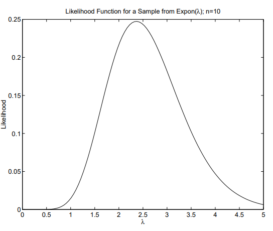
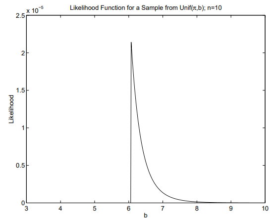
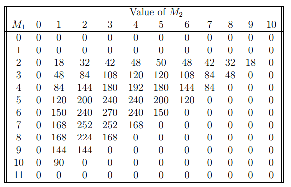
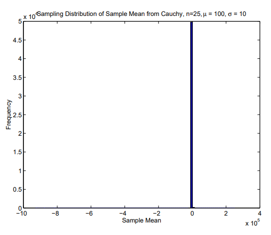
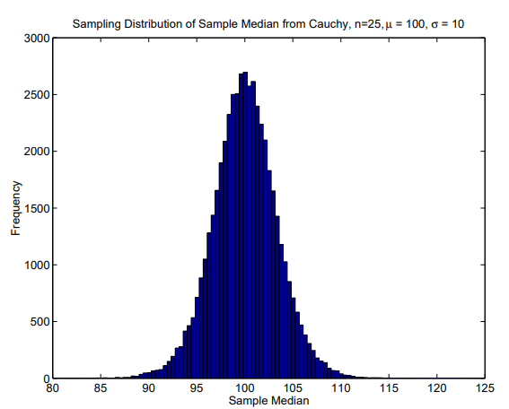
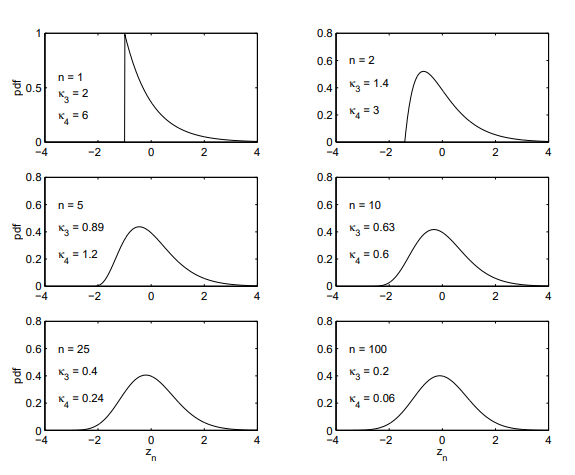

8 표본, 통계량, 표본분포
정의: 모수 – 모집단의 특성이다.
정의: 통계량 – 표본의 특성이다. 구체적으로 통계량은 표본의 함수이다.
\[ T = g(X_1, X_2,\cdots,X_n) \]
그리고
\[ t =g(x_1, x_2,\cdots,x_3) \]
함수 \(T\)는 확률변수이고, 함수 \(t\)는 그 확률변수의 실현값이다. 예를 들어 \(T_1=\bar{X}\)와 \(T_2=S_X^2\)는 통계량이다.
정의: 표본분포 – 표본분포는 통계량의 분포이다. 예를 들어 \(\bar{X}\)의 표본분포는 \(\bar{X}\)의 분포이다.
8.1 확률표본추출
- 몇 가지 비확률표본
- 자발적 응답 표본: 응답자가 자신이 표본에 포함될지 여부를 결정한다.
- 편의표본: 조사자가 이용 가능하거나 저렴하게 얻을 수 있는 단위들을 이용하여 모집단에서 단위들의 집합을 얻는다.
- 유한모집단에서의 확률표본추출
- 절차: 모집단에서 단위를 하나씩 무작위로 선택한다.
- 표본추출은 복원추출 또는 비복원추출로 할 수 있다.
확률표본추출의 성질
표본의 분포는 교환가능하다.
크기가 \(n\)인 가능한 모든 표본은 동일한 확률을 가진다. 이것이 단순확률표본의 정의이다.
모집단의 각 단위는 선택될 동일한 기회를 가진다.
정의: 모집단분포 – 표본에서 \(i\)번째 단위의 값이 \(X_i\)일 때, \(X_i\)의 주변분포를 말한다.
- 교환가능성에 의해 모든 \(X_i\)의 주변분포는 동일하다는 점에 유의하자.
크기가 \(n\)인 확률표본
- 일반적으로 크기가 \(n\)인 확률표본은 여러 의미를 가질 수 있다. 예를 들어 복원추출, 비복원추출, 층화추출 등이 있다.
앞으로 “크기가 \(n\)인 확률표본”이라고 하면 독립이고 동일한 분포를 따르는(iid) 확률변수들의 열을 의미한다.
- 이는 유한모집단에서 복원추출하거나 무한모집단에서 무작위로 표본추출할 때 발생할 수 있다.
- 별도의 설명이 없으면 “크기가 \(n\)인 확률표본”이라는 표현은 iid 확률변수를 뜻하며, 유한모집단에서의 비복원추출을 뜻하지 않는다.
크기가 \(n\)인 확률표본의 결합 pdf 또는 pmf는 다음과 같이 나타낸다.
\[ f_X(X) \overset{def}= f_{X_1, X_2,\cdots,X_n}(x_1,x_2,\cdots,x_3) \]
여기서 \(X\)와 \(x\)는 각각 확률변수 벡터와 실현값 벡터이다. 즉,
\[ X = \begin{pmatrix} X_1 \\ X_2 \\ \vdots \\ X_n \\ \end{pmatrix} \quad\text{그리고}\quad x=\begin{pmatrix} x_1 \\ x_2 \\ \vdots \\ x_n \\ \end{pmatrix} \]
- 열벡터 \(U\)의 전치벡터는 \(U'\)로 나타낸다. 예를 들어
\[ X' = (X_1 \ X_2 \cdots X_n) \]
- 독립성을 이용하면 다음과 같다.
\[ f_X(X) = \prod f_X{(x_i)} \]
- 예제: \(X_1,X_2,\cdots,X_n\)이 \(\mathrm{Exp}(\lambda)\) 분포에서 얻은 크기 \(n\)의 확률표본이라고 하자. 그러면 표본의 결합 pdf는 다음과 같다.
\[ f_X(X)= \prod^n_{i=1}\lambda e^{-\lambda x_i} I_{(0, \infty)}(x_i) = \lambda^n \exp \Bigg\{ -\lambda \sum^n_{i=1} x_i \Bigg\}I_{(0,x_{(n)}]}(x_{(1)})I_{[x_{(1)},\infty)}(x_{(n)}) \]
- 예제: \(X_1,X_2,\cdots,X_n\)이 \(\mathrm{Unif}[a,b]\)에서 얻은 크기 \(n\)의 확률표본이라고 하자. 그러면 표본의 결합 pdf는 다음과 같다.
\[ f_X(X)= \prod^n_{i=1}(b-a)^{-1} I_{[a,b]}(x_i) = (b-a)^n I_{[a,x_{(n)}]}(x_{(1)})I_{[x_{(1)},b]}(x_{(n)}) \]
- 유한모집단에서 비복원추출한 확률표본의 PMF. 크기가 \(N\)이고 서로 다른 값이 \(k\leq N\)개인 모집단을 생각하자.
- 그 값들을 \(v_1,v_2,\cdots,v_k\)로 나타내자.
- 모집단에는 값 \(v_1\)을 갖는 단위가 \(M_1\)개, 값 \(v_2\)를 갖는 단위가 \(M_2\)개 등으로 포함되어 있다고 하자.
- \(N=\sum_{j=1}^k M_j\)임에 유의하자.
- 모집단에서 크기 \(n\)의 표본을 비복원으로 무작위 추출한다.
- \(X_i\)를 표본에서 \(i\)번째 단위의 값이라고 하고, \(X\)들의 \(n\times1\) 벡터를 \(X\)로 나타내자.
- \(x\)를 \(X\)의 실현값이라고 하자.
- 즉, \(x\)는 원소들이 \(v_1,v_2,\cdots,v_k\)에서 선택된 \(n\times1\) 벡터이다.
- 그러면 표본의 pmf는 다음과 같다.
\[ f_X(X) = P(X=x) = \frac{\displaystyle\prod^k_{j=1} \begin{pmatrix} M_j \\ y_j \end{pmatrix}} {\begin{pmatrix} N \\ n \end{pmatrix} \begin{pmatrix} n \\ y_1, y_2,\cdots,y_n \end{pmatrix}} \]
여기서 \(y_j\)는 \(X\)에서 \(v_j\)의 빈도이다.
- 증명: \(j=1,\cdots,k\)에 대해 \(Y_j\)를 \(X\)에서 \(v_j\)의 빈도라고 하자.
- \(\sum_{j=1}^kY_j=n\)임에 유의하자.
- \(Y\)들의 벡터를 \(Y\)로, \(y\)들의 벡터를 \(y\)로 나타내자.
- 또한 \(y\)를 만들어 내는 서로 다른 \(X\) 수열의 개수를 \(n_y\)로 나타내자.
- 그러면
\[ f_Y(y) = Pr(Y=y) = f_x(x) \times n_y \]
여기서 \(f_X(x)\)는 값 \(v_1\)을 갖는 단위가 \(y_1\)개, 값 \(v_2\)를 갖는 단위가 \(y_2\)개 등으로 포함된 특정한 \(x\) 수열 하나의 확률이다.
- 각 \(X\)의 순열은 교환가능성에 의해 같은 확률을 가지므로, \(f_X(x)\)에 \(n_y\)를 곱하는 것이 옳다. 다음을 보일 수 있다.
\[ f_Y(y) = \frac{\displaystyle\prod^k_{j=1} \begin{pmatrix} M_j \\ y_j \end{pmatrix}} {\begin{pmatrix} N \\ n \end{pmatrix}}\] and \[ n_y =\begin{pmatrix} n \\ y_i , y_2,\cdots,y_n \end{pmatrix} \]
- 따라서 표본의 pmf는 다음과 같다.
\[ f_X(X) = \frac{\displaystyle\prod^k_{j=1} \begin{pmatrix} M_j \\ y_j \end{pmatrix}} {\begin{pmatrix} N \\ n \end{pmatrix} \begin{pmatrix} n \\ y_1, y_2,\cdots,y_n \end{pmatrix}} \]
- 예제: 12마리의 들쥐로 이루어진 모집단을 생각하자. 여기서 종 \(j\)에 속하는 들쥐가 \(M_j\)마리이고 \(j=1,2,3\)이다.
- \(X_1,X_2,X_3,X_4\)가 이 모집단에서 비복원추출한 확률표본이라고 하자.
- 또한 다음과 같다고 하자.
- Furthermore, suppose that
\[ X= (s_3 \ s_1 \ s_1 \ s_2)' \]
여기서 \(s_j\)는 종 \(j\)를 나타낸다.
- 표본의 결합 pdf는 다음과 같다.
\[ \begin{align} f_X(s_3, s_1, s_1, s_2) &= \frac{\begin{pmatrix} M_1 \\ 2 \end{pmatrix} \begin{pmatrix} M_2 \\ 1 \end{pmatrix} \begin{pmatrix} M_3 \\ 2 \end{pmatrix}}{\begin{pmatrix} 12 \\ 4 \end{pmatrix}\begin{pmatrix} 4 \\ 2,1,1 \end{pmatrix}} \\ &= \frac{\frac{1}{2}M_1(M_1 -1)M_2M_3}{495 \times 12} \\ &=\frac{M_1(M_1 -1)M_2(12-M_1-M_2)}{11,880} \end{align} \]
8.2 가능도
- 확률분포족 또는 모형: 표본의 결합 pdf 또는 pmf가 미지 모수의 값에 의존하면, 결합 pdf 또는 pmf는 다음과 같이 쓴다.
\[ f_X(x|\theta) \text{ 여기서 } \theta =(\theta_1 \ \theta_2 \ \cdots \theta_k)' \]
는 미지 모수들의 벡터이다.
- 예를 들어 \(X_1,\cdots,X_n\)이 \(N(\mu,\sigma^2)\)에서 얻은 크기 \(n\)의 확률표본이고 \(\mu\)와 \(\sigma^2\)가 미지이면, 결합 pdf는 다음과 같다.
\[ f_X(x|\theta) = f_X(x|/mu, \sigma^2) = \frac{\exp \Bigg\{\frac{1}{2\sigma^2}\displaystyle\sum^n_{i=1}(x_i -\mu)^2\Bigg\}}{(2\pi\sigma^2)^{n/2}}, \ 여기서 \ \theta =\begin{pmatrix}\mu \\ \sigma^2 \end{pmatrix} \]
\(\theta\)가 하나의 모수만 포함하면 굵은 글씨 없이 \(\theta\)로 나타낸다.
가능도 함수: 가능도 함수는 \(x\)가 관측되었을 때 특정한 \(\theta\) 값이 얼마나 그럴듯한지를 나타내는 척도이다.
- 주의: 가능도 함수는 확률이 아니다.
- 가능도 함수는 \(L(\theta)\)로 나타내며, \(x\)의 결합 pdf 또는 pmf에서 \(\theta\)와 \(x\)의 역할을 바꾸고 \(\theta\)에 의존하지 않는 모든 항을 제거하여 얻는다. 즉,
\[ L(\theta) = L(\theta|x) \propto f_x(x|\theta) \]
- 예제: \(X_1,X_2,\cdots,X_n\)이 \(\mathrm{Exp}(\lambda)\) 분포에서 얻은 크기 \(n\)의 확률표본이라고 하자. 그러면 가능도 함수는 다음과 같다.
\[ L(\lambda) = \lambda^n\exp\Bigg\{-\lambda \displaystyle\sum^n_{i=1}x_i\Bigg\}\]
모든 \(x\)가 \((0,\infty)\) 안에 있을 때 성립한다.
- 이 예에서는 가능도 함수와 결합 pdf가 동일하다는 점에 유의하자. \(n=10\)이고 다음이
\[ x = (0.4393 \ 0.5937 \ 0.0671 \ 2.0995 \ 0.1320 \ 0.0148 \ 0.0050 \ 0.1186 \ 0.4120 \ 0.3483)' \]
관측되었다고 하자.
표본평균은 \(\bar{x}=4.2303/10=0.42303\)이다.
가능도 함수는 아래에 그려져 있다.
- 가능도를 비교하기 위해 비율을 사용한다.
- 예를 들어 \(\lambda=2.5\)일 가능도는 \(\lambda=3\)일 가능도의 \(1.34\)배이다.
\[ \frac{L(2.5)}{L(3)} = 1.3390 \]
- 주의: 실제 \(x\) 값들은 \(\mathrm{Exp}(2)\)에서 표본추출되었다.

- 예제: \(X_1,X_2,\cdots,X_n\)이 \(\mathrm{Unif}[\pi,b]\)에서 얻은 크기 \(n\)의 확률표본이라고 하자. 그러면 가능도 함수는 다음과 같다.
\[ L(b) = (b-\pi)^{-n}I_{[x_{(n)},\infty](b)} \]
\(x_{(1)}>\pi\)일 때 성립한다.
- \(n=10\)이고 다음이
\[ x = (5.9841 \ 4.9298 \ 3.7507 \ 5.1264 \ 3.8780 \ 4.8656 \ 6.0682 \ 4.1946 \ 5.2010 \ 4.3728)' \]
관측되었다고 하자.
- 이 표본에서 \(x_{(1)}=3.7507\), \(x_{(n)}=6.0682\)이다.
- 가능도 함수는 아래에 그려져 있다.
- 주의: 실제 \(x\) 값들은 \(\mathrm{Unif}(\pi,2\pi)\)에서 표본추출되었다.

- 예제: 12마리의 들쥐로 이루어진 모집단을 생각하자. 여기서 종 \(j\)에 속하는 들쥐가 \(M_j\)마리이고 \(j=1,2,3\)이다.
- \(X_1,X_2,X_3,X_4\)가 이 모집단에서 비복원추출한 확률표본이라고 하자.
- 또한 다음과 같다고 하자.
\[ X = (s_3 \ s_1 \ s_1 \ s_2)' \]
여기서 \(s_j\)는 종 \(j\)를 나타낸다.
- 가능도 함수는 다음과 같다.
\[ L(M_1,M_2) = M_1(M_1 -1)M_2(12-M_1-M_2) \]
\(M_1+M_2+M_3=12\)이므로 모수는 세 개가 아니라 두 개뿐임에 유의하자.
가능도 함수는 아래 표에 표시되어 있다.
- 주의: 실제 \(x\) 값들은 \(M_1=5\), \(M_2=3\), \(M_3=4\)인 모집단에서 표본추출되었다.

가능도 원리
자료가 두 가설의 상대적 우열에 관해 제공하는 모든 정보는 그 자료에 대한 두 가설의 가능도비 안에 포함되어 있다(Edwards, 1992).
가능도 원리를 다르게 말하면, 각각 \(\theta\)에 대한 모형에 근거한 두 실험이 같은 가능도를 준다면, 두 실험에서 \(\theta\)에 대한 추론은 같아야 한다는 것이다. based on a model for \(\theta\), give the same likelihood, then the inference about \(\theta\) should be the same in the two .
예제
- 실험 1: 35센트 동전을 독립적으로 \(n\)번 던진다. \(\theta\)를 앞면이 나올 확률이라 하고, \(X\)를 관측된 앞면의 개수라고 하자. 그러면 \(X\)는 다음 이항 pmf를 갖는다.
\[ f_X(x|\theta) = \begin{pmatrix} n \\x \end{pmatrix}\theta^x (1-\theta)^{n-x}I_{\{0,1,\cdots,n\}}(x) \]
여기서 \(n=20\)이다.
- 앞면이 \(x=6\)번 관측되었다고 하자. 그러면 가능도 함수는 다음과 같다.
\[ L(\theta|x=6) = \theta^6(1-\theta)^{14} \]
- 실험 2: 앞면이 \(r=6\)번 관측될 때까지 35센트 동전을 독립 시행으로 던졌다. \(Y\)를 앞면 6번을 얻는 데 필요한 시행 횟수라고 하자. 그러면 \(Y\)는 다음 음이항 pmf를 갖는다.
\[ f_Y(y|\theta,r) = \begin{pmatrix} y-1 \\ r-1 \end{pmatrix}\theta^y(1-\theta)^{y-r}I_{\{r,r+1,\cdots\}}(y) \]
여기서 \(r=6\)이다.
- 6번째 앞면이 20번째 시행에서 발생했다고 하자. 그러면 가능도 함수는 다음과 같다.
\[ L(\theta|y=20) =\theta^6(1-\theta)^{14} \]
가능도 원리는 두 실험에서 \(\theta\)에 대한 모든 추론이 같아야 함을 요구한다.
\(H_0:\theta=0.5\) 대 \(H_\alpha:\theta<0.5\)를 검정하고자 한다고 하자.
위 두 실험에 근거한 \(p\)-값은 다음과 같다.
\[ P(X \le 6|n=20, \theta=0.5 = \displaystyle\sum^6_{x=0} \begin{pmatrix} 20 \\x \end{pmatrix}(1/2)^x(1-1/2)^{20-x}=0.0577 \]
이항 실험에서의 값이고,
\[ P(X \ge 20|r=6, \theta=0.5 = \displaystyle\sum^{\infty}_{y=20} \begin{pmatrix} y-1 \\6-1 \end{pmatrix}(1/2)^6(1-1/2)^{y-6}=0.0318 \]
음이항 실험에서의 값이다.
- 첫 번째 실험에서는 \(H_0\)를 기각하지 않지만 두 번째 실험에서는 \(H_0\)를 기각한다면, 가능도 원리를 위반한 것이다.
8.3 충분통계량
- 한 가지 정의: 통계량 \(T=t(X)\)는 다음의 경우에만 분포족 \(f_X(X|\theta)\)에 대해 충분하다. 즉, 가능도 함수가 \(X\)에 \(T\)를 통해서만 의존할 때이다.
\[ L(\theta) = h[t(X), \theta] \]
- 일반적인 정의: 통계량 \(T=t(X)\)는 다음의 경우에만 분포족 \(f_X(x|\theta)\)에 대해 충분하다. 즉, \(T\)가 주어졌을 때 \(X\)의 조건부분포가 \(\theta\)에 의존하지 않을 때이다.
\[ f_{X|T}(x|t,\theta) = h(x) \]
이 정의는 \(T\)를 관측한 뒤에는 자료의 다른 함수들이 \(\theta\)에 대한 추가 정보를 제공하지 않는다는 뜻이다. 두 정의는 동치임을 보일 수 있다.
표본공간과 분할: 표본공간은 \(X\)가 가질 수 있는 모든 값들의 집합이다.
이는 \(X\)의 결합 pdf 또는 pmf의 지지집합과 같다.
통계량은 표본공간을 분할한다. 각 분할은 통계량의 서로 다른 값에 대응한다.
특정한 분할은 그 분할을 색인하는 통계량의 특정 값을 만들어 내는 \(X\)의 가능한 모든 값을 포함한다.
통계량이 충분하면, 우리가 살펴보아야 할 자료의 유일한 특성은 표본이 어느 분할에 속하는가이다.
충분통계량의 비유일성: \(T\)가 충분통계량이면 \(T\)의 임의의 일대일 변환도 충분통계량이다.
\(T\)의 어떤 변환도 표본공간에 같은 분할을 유도한다는 점에 유의하자. 따라서 충분통계량은 유일하지 않지만, \(T\)에 대응하는 분할은 유일하다.
인수분해 기준(Neyman): 통계량 \(T=t(X)\)는 결합 pdf 또는 pmf가 다음과 같이 인수분해될 때 그리고 그럴 때만 충분통계량이다. only if the joint pdf (pmf) factors a
\[ f_X(X|\theta) = g[t(X)|\theta]h(X) \]
- 어떤 경우에는 \(h(X)\)가 \(X\)의 자명한 함수이다.
- 예를 들어 \(h(X)=c\)이고, 여기서 \(c\)는 \(X\)에 의존하지 않는 상수이다.
- 예제: 베르누이 시행 – \(i=1,\cdots,n\)에 대해 \(X_i\)가 iid \(\mathrm{Bern}(p)\) 확률변수라고 하자.
- \(\theta=p\)임에 유의하자.
- 결합 pmf는 다음과 같다.
\[ f_X(X|p) = \prod^n_{i=1}p^{x_i}(1-p)^{1-x_i}I_{\{0,1\}}(x_i)=p^y(1-p)^{n-y}\prod^n_{i=1}I_{\{0,1\}}(x_i) \]
여기서 \(y=\sum_{i=1}^n x_i\)이다.
따라서 \(Y=\sum_{i=1}^nX_i\)는 충분통계량이다.
이 예에서 \(Y\)가 주어졌을 때 \(X\)의 조건부분포가 \(p\)에 의존하지 않음을 확인하는 것은 그리 어렵지 않다.
- \(Y=y\)가 주어졌을 때 \(X\)의 조건부분포는 다음과 같다.
- \(Y=y\)가 주어졌을 때 \(X\)의 조건부분포는 다음과 같다.
\[ \begin{align} P(X=x|Y=y) &= \frac{P(X=x)I_{\{y\}}(\sum x_i)}{p(Y=y)} \\ &= \frac{\displaystyle\prod^n_{i=1}p^{x_i}(1-p)^{1-x_i}I_{\{0,1\}}(x_i)I_{\{y\}}(\sum x_i)}{\begin{pmatrix} n \\ y \end{pmatrix}p^y(1-p)^{n-y}I_{\{0,1,2,\cdots,n\}}(y)} \\ &= \frac{\displaystyle\prod^n_{i=1}I_{\{0,1\}}(x_i)I_{\{y\}}(\sum x_i)}{\begin{pmatrix} n \\ y \end{pmatrix}I_{\{0,1,2,\cdots,n\}}(y)} \end{align} \]
이는 \(p\)에 의존하지 않는다.
즉, 충분통계량이 주어졌을 때 \(X\)의 조건부분포는 \(\theta\)에 의존하지 않는다.
예제: \(\mathrm{Poi}(\lambda)\)에서의 표본추출.
- \(X_1,\cdots,X_n\)이 \(\mathrm{Poi}(\lambda)\)에서 얻은 크기 \(n\)의 확률표본이라고 하자.
- 결합 pmf는 다음과 같다.
\[ f_X(X|\lambda) = \frac{e^{-n}\lambda^t}{\displaystyle\prod^n_{i=1}x_i!}\prod^n_{i=1}I_{\{0,1,\cdots,\infty\}}(x_i) \]
여기서 \(t=\sum_{i=1}^n x_i\)이다.
- 따라서 가능도 함수는 다음과 같다.
\[ L(\lambda) = e^{-n\lambda}\lambda^t \]
그리고 \(T=\sum_{i=1}^nX_i\)는 충분통계량이다.
- \(T\sim\mathrm{Poi}(\lambda)\)임을 상기하자. 따라서 \(T=t\)가 주어졌을 때 \(X\)의 분포는 다음과 같다.
\[ \begin{align} P(X=x|T=t) &= \frac{P(X=x, \ T=t)}{P(T=t)} \\ &= \frac{e^{-n\lambda}\lambda^tI_{\{t\}}(\sum x_i)t! \displaystyle\prod^n_{i=1}I_{\{0,1,\cdots,\infty\}}(x_i)}{\bigg(\displaystyle\prod^n_{i=1}x_i!\bigg)e^{-n\lambda}(n\lambda)^t} \\ &= \begin{pmatrix} t \\ x_1, x_2,\cdots,x_n\end{pmatrix}\bigg(\frac{1}{n}\bigg)^{x_1}\bigg(\frac{1}{n}\bigg)^{x_2}\cdots\bigg(\frac{1}{n}\bigg)^{x_n} \\ &\Longrightarrow (X|T=t) \sim multinom \bigg(t, \frac{1}{n}, \frac{1}{n}, \cdots, \frac{1}{n} \bigg) \end{align} \]
충분통계량이 주어졌을 때 \(X\)의 분포는 \(\lambda\)에 의존하지 않음에 유의하자.
예제: \(i=1,\cdots,n\)에 대해 \(X_i\sim iid\ N(\mu,1)\)라고 하자. 결합 pdf는 다음과 같다.
\[ \begin{align} f_X(X|\mu) &= \frac{\exp\bigg\{-\frac{1}{2}\displaystyle\sum^n_{i=1}(x_i - \mu)^2\bigg\}}{(2\pi)^{\frac{n}{2}}} \\ &= \frac{\exp\bigg\{-\frac{1}{2}\displaystyle\sum^n_{i=1}(x_i - \bar x + \bar x - \mu)^2\bigg\}}{(2\pi)^{\frac{n}{2}}} \\ &= \frac{\exp\bigg\{-\frac{1}{2}\displaystyle\sum^n_{i=1}[(x_i - \mu)^2 +2(x_i - \bar x)(\bar x - \mu)+(\bar x - \mu)^2]\bigg\}}{(2\pi)^{\frac{n}{2}}} \\ &= \frac{\exp\bigg\{-\frac{1}{2}\displaystyle\sum^n_{i=1}(x_i - \bar x)^2 + n(\bar x - \mu)^2\bigg\}}{(2\pi)^{\frac{n}{2}}} \end{align} \]
\(\sum_{i=1}^n(x_i-\bar{x})=0\)이고 뒤의 항이 \(\mu\)에 의존하지 않기 때문이다.
- 따라서 가능도 함수는 다음과 같다.
\[ L(\theta) = \exp \bigg\{-\frac{n}{2}(\bar x - \mu)^2 \bigg\} \]
그리고 \(\bar{X}\)는 이 분포족에 대한 충분통계량이다.
- 이는 \(\bar{X}\)가 자료에 포함된 \(\mu\)에 관한 모든 정보를 담고 있음을 의미한다.
- 즉, 표본을 이용하여 \(\mu\)에 대해 알고자 한다면 \(\bar{X}\)를 살펴보면 되며, 자료의 다른 함수는 살펴볼 필요가 없다.
- 순서통계량은 충분하다: \(X_1,\cdots,X_n\)이 복원 또는 비복원으로 얻은 확률표본이면, 순서통계량은 충분통계량이다. without replacement), then the order statistics are sufficient.
- 증명: 교환가능성에 의해
\[ f_X(X|\theta) = f_X(X_{(1)}, X_{(2)},\cdots,X_{(n)}|\theta) \]
- 가능도 함수는 결합 pdf 또는 pmf에 비례한다.
- 따라서 가능도 함수는 순서통계량의 함수이고, 정의에 의해 순서통계량은 충분통계량이다.
- 확률표본이 연속분포에서 추출되었다면 다음을 보일 수 있다. shown that
\[ P(X=X|x_{(1)},\cdots,x_{(n)}) = \frac{1}{n!} \]
그리고 이 분포는 \(\theta\)에 의존하지 않는다.
따라서 정의에 의해 순서통계량은 충분통계량이다.
일모수 지수족: 확률변수 \(X\)가 다음 조건을 만족하면 일모수 정규 지수족에 속하는 분포를 가진다고 한다. have a distribution within the one parameter regular family if
\[ f_X(x|\theta) = B(\theta)h(x)\exp\{Q(\theta)R(x)\} \]
- \(Q(\theta)\)는 \(\theta\)의 비자명한 연속함수이고, \(R(x)\)는 \(x\)의 비자명한 함수이다.
- \(X\)의 지지집합을 지시변수로 나타내면, 그 지시변수는 \(h(x)\)의 일부임에 유의하자.
- 즉, 지지집합은 \(\theta\)에 의존할 수 없다.
- 함수 \(B(\theta)\)와 \(h(x)\) 중 하나 또는 둘 다 자명할 수 있다.
- 지수족에서 크기 \(n\)의 확률표본을 얻으면 그 pdf 또는 pmf는 다음과 같다.
\[f_X(X|\theta) = B(\theta)^n \exp \bigg\{ Q(\theta)\displaystyle\sum^n_{i=1}R(x_i)\bigg\}\prod^n_{i=1}h(x_i) \]
- 인수분해 기준에 의해 \(T=\sum_{i=1}^nR(X_i)\)는 \(\theta\)에 대한 충분통계량이다.
일모수 지수족의 예
\(\sigma^2\)가 알려진 \(N(\mu,\sigma^2)\)에서 크기 \(n\)의 확률표본을 얻는 경우를 생각하자. 그러면 \(T=\sum_{i=1}^nX_i\)는 충분통계량이다.
\(\mu\)가 알려진 \(N(\mu,\sigma^2)\)에서 크기 \(n\)의 확률표본을 얻는 경우를 생각하자. 그러면 \(T=\sum_{i=1}^n(X_i-\mu)^2\)는 충분통계량이다.
\(\mathrm{Bern}(p)\)에서 크기 \(n\)의 확률표본을 얻는 경우를 생각하자. 그러면 \(T=\sum_{i=1}^nX_i\)는 충분통계량이다.
\(\mathrm{Bin}(n,p)\)에서 크기 \(k\)의 확률표본을 얻는 경우를 생각하자. 그러면 \(T=\sum_{i=1}^nY_i\)는 충분통계량이다.
\(\mathrm{Geom}(n,p)\)에서 크기 \(n\)의 확률표본을 얻는 경우를 생각하자. 그러면 \(T=\sum_{i=1}^nX_i\)는 충분통계량이다.
\(r\)이 알려진 \(\mathrm{Neg\mathrm{Bin}}(r,p)\)에서 크기 \(n\)의 확률표본을 얻는 경우를 생각하자. 그러면 \(T=\sum_{i=1}^nX_i\)는 충분통계량이다.
\(\mathrm{Poi}(\lambda)\)에서 크기 \(n\)의 확률표본을 얻는 경우를 생각하자. 그러면 \(T=\sum_{i=1}^nX_i\)는 충분통계량이다.
\(\mathrm{Expon}(\lambda)\)에서 크기 \(n\)의 확률표본을 얻는 경우를 생각하자. 그러면 \(T=\sum_{i=1}^nX_i\)는 충분통계량이다.
\(\alpha\)가 알려진 \(\mathrm{Gam}(\alpha,\lambda)\)에서 크기 \(n\)의 확률표본을 얻는 경우를 생각하자. 그러면 \(T=\sum_{i=1}^nX_i\)는 충분통계량이다.
\(\lambda\)가 알려진 \(\mathrm{Gam}(\alpha,\lambda)\)에서 크기 \(n\)의 확률표본을 얻는 경우를 생각하자. 그러면 \(T=\sum_{i=1}^n\\ln(X_i)\)는 충분통계량이다.
\(\alpha_1\)이 알려진 \(\mathrm{Beta}(\alpha_1,\alpha_2)\)에서 크기 \(n\)의 확률표본을 얻는 경우를 생각하자. 그러면 \(T=\sum_{i=1}^n\\ln(1-X_i)\)는 충분통계량이다.
\(\alpha_2\)가 알려진 \(\mathrm{Beta}(\alpha_1,\alpha_2)\)에서 크기 \(n\)의 확률표본을 얻는 경우를 생각하자. 그러면 \(T=\sum_{i=1}^n\\ln(X_i)\)는 충분통계량이다.
지수족에 속하지 않는 분포의 예
\(a\)가 알려진 \(\mathrm{Unif}(a,b)\)에서 크기 \(n\)의 확률표본을 얻는 경우를 생각하자. 그러면 인수분해 기준에 의해 \(T=X_{(n)}\)은 충분통계량이다.
\(b\)가 알려진 \(\mathrm{Unif}(a,b)\)에서 크기 \(n\)의 확률표본을 얻는 경우를 생각하자. 그러면 인수분해 기준에 의해 \(T=X_{(1)}\)은 충분통계량이다.
\(a\)와 \(b\)가 모두 알려지지 않은 \(\mathrm{Unif}(a,b)\)에서 크기 \(n\)의 확률표본을 얻는 경우를 생각하자. 그러면
\[ T = \begin{pmatrix} X_{(1)} \\ X_{(n)}\end{pmatrix} \]
은 인수분해 기준에 의해 충분통계량이다.
- \(\mathrm{Unif}(\theta,\theta+1)\)에서 크기 \(n\)의 확률표본을 얻는 경우를 생각하자. 그러면
\[ T = \begin{pmatrix} X_{(1)} \\ X_{(n)}\end{pmatrix} \]
은 인수분해 기준에 의해 충분통계량이다.
예제
- \(\mu\)와 \(\sigma^2\)가 모두 알려지지 않은 \(N(\mu,\sigma^2)\)에서 크기 \(n\)의 확률표본을 얻는 경우를 생각하자. \((X_i-\mu)\)를 다음과 같이 쓰면
\[ \begin{align} (X_i -\mu)^2 &= [(X_i - \bar X)+(\bar X - \mu)]^2 \\ &= (X_i - \bar X)^2 +2(X_i - \bar X)(\bar X - \mu) +(\bar X - \mu)^2 \end{align} \]
- 가능도 함수는 다음과 같이 쓸 수 있다.
\[ \begin{align} L(\mu, \sigma^2|X) &= \frac{\exp\bigg\{ \frac{1}{2\sigma^2}\displaystyle\sum^n_{i=1}(X_i - \mu)^2\bigg\}}{(2\pi\sigma^2)^{\frac{n}{2}}} \\ &= \frac{\exp\bigg\{ \frac{1}{2\sigma^2}\displaystyle\sum^n_{i=1}[(X_i - \bar X)^2 +2(X_i -\bar X)(\bar X - \mu) +(\bar X- \mu)^2]\bigg\}}{(2\pi\sigma^2)^{\frac{n}{2}}} \\ &= \frac{\exp\bigg\{\frac{1}{2\sigma^2}\bigg[\displaystyle\sum^n_{i=1}(X_i - \bar X)^2 +n(\bar X -\mu)^2\bigg]\bigg\}}{(2\pi\sigma^2)^{\frac{n}{2}}} \end{align} \]
인수분해 기준에 의해
\[ T = \begin{pmatrix} S^2_X \\ \bar X\end{pmatrix} \]
은 충분통계량이다.
8.4 표본분포
- 통계량은 확률변수임을 상기하자.
- 통계량의 분포를 표본분포라고 한다.
- 이 절에서는 해석적으로 얻을 수 있는 몇 가지 표본분포를 설명한다.
- 유한모집단에서 비복원추출하는 경우.
- 각 단위가 \(v_1,\cdots,v_k\) 중 하나의 값만 갖는, \(N\)개의 단위로 이루어진 유한모집단을 생각하자.
- \(N\)개의 단위 중 \(j=1,\cdots,k\)에 대해 \(M_j\)개가 값 \(v_j\)를 갖는다.
- \(\sum_{j=1}^kM_j=N\)임에 유의하자.
- 크기 \(n\)의 표본을 하나씩 무작위로 비복원추출한다.
- \(X_i\)를 표본에서 \(i\)번째 단위의 값이라고 하자.
- 또한 \(Y_j\)를 표본에서 값 \(v_j\)를 갖는 \(X\)의 개수라고 하자.
- \(\theta'=(M_1\ M_2\ \cdots\ M_k)\)가 미지 모수 벡터이면, \(X_1,\cdots,X_n\)의 결합 pmf는 다음과 같다.
\[ f_X(X|\theta) = \frac{\displaystyle\prod^k_{j=1}\begin{pmatrix} M_j \\ y_j\end{pmatrix}}{\begin{pmatrix} N \\ n\end{pmatrix} \begin{pmatrix} N \\ y_i, y_2,\cdots,y_n\end{pmatrix}} \times l_{\{n\}}(\displaystyle\sum^{k}_{j=1}y_i)\displaystyle\prod^n_{i=1}I_{\{v_1,\cdots,v_k\}}(x_i)\displaystyle\prod^k_{j=1}I_{\{0,1,\cdots,M_j\}}(y_i) \]
인수분해 정리에 의해 \(Y=(Y_1,Y_2,\cdots,Y_k)'\)는 충분통계량이다.
\(Y\)의 표본분포는 다음과 같다.
\[ f_Y(y|\theta) = \frac{\displaystyle\prod^k_{j=1} \begin{pmatrix} M_j \\ y_j \end{pmatrix}}{\begin{pmatrix} N \\ n \end{pmatrix}}I_{\{n\}} \Bigg( \displaystyle\sum^k_{j=1}y_i\Bigg)\displaystyle\prod^k_{j=1}I_{\{0,1,\cdots,M_j\}}(y_j) \]
\(Y_k=N-\sum_{j=1}^{k-1}Y_j\)이므로 \(T=(Y_1,Y_2,\cdots,Y_{k-1})'\)도 충분통계량임에 유의하자. \(Y\)는 \(T\)의 일대일 함수이다. \(k=2\)이면 표본분포는 초기하분포로 단순화된다.
서로 다른 값이 \(k\)개인 유한모집단에서 복원추출하거나, 서로 다른 값이 \(k\)개인 무한모집단에서 비복원추출하는 경우. or sampling without replacement from an infinite population that has \(k\) distinct values.
- 값 \(v_j\)를 갖는 단위의 비율이 \(j=1,\cdots,k\)에 대해 \(p_j\)인 모집단을 생각하자.
- 그러면 \(\sum_{j=1}^kp_j=1\)임에 유의하자.
- 모집단이 유한하면 복원추출로, 크기 \(n\)의 표본을 하나씩 무작위로 추출한다.
- \(X_i\)를 표본에서 \(i\)번째 단위의 값이라고 하자.
- 또한 \(Y_j\)를 표본에서 값 \(v_j\)를 갖는 \(X\)의 개수라고 하자.
- \(\theta'=(p_1\ p_2\ \cdots\ p_k)\)를 미지 모수 벡터라고 하자.
- \(X\)들은 iid이고 표본의 결합 pmf는 다음과 같다.
\[ \begin{align} f_X(X|\theta) &= \prod^n_{i=1}\prod^k_{j=1}p_j^{I_{\{v_j\}}(x_i)}I_{\{v_1,\cdots,v_k\}}(x_i) \\ &= \prod^{k}_{j=1}p^{y_j}_j I_{\{n\}}\Bigg( \displaystyle\sum^k_{j=1}y_j \Bigg)\prod^k_{j=1}I_{\{0,1,\cdots,n\}}(y_j) \end{align} \]
\(k=2\)이면 표본분포는 이항분포로 단순화된다.
따라서 \(Y'=(Y_1,Y_2,\cdots,Y_k)\)는 충분통계량이다. \(Y\)의 표본분포는 다항분포이다.
\[ f_Y(y|\theta) = \begin{pmatrix} n \\ y_1, y_2, \cdots,y_k \end{pmatrix} \prod^k_{j=1}p^{y_j}_jI_{\{n\}}\bigg( \sum^k_{j-1}y_j\bigg)\prod^k_{j=1}I_{\{0,1,\cdots,n\}}(y_j) \]
\(k=2\)이면 표본분포는 이항분포로 단순화된다.
포아송분포에서의 표본추출.
- 코요테의 한 배 새끼 수가 모수 \(\lambda\)를 갖는 포아송분포를 따른다고 하자.
- \(X_1,\cdots,X_n\)을 \(n\)개의 굴에서 관측한 새끼 수의 확률표본이라고 하자.
- \(X\)들은 iid이고 표본의 결합 pmf는 다음과 같다.
\[ \begin{align} P(X=x) &= \displaystyle\prod^n_{i=1}\frac{e^{-\lambda}\lambda^{x_i}}{x_i!}I_{\{0,1,\cdots\}}(x_i) \\ &=\frac{e^{-n\lambda}\lambda^{x_i}}{\displaystyle\prod^n_{i=1}x_i!}\displaystyle\prod^n_{i=1}I_{\{0,1,\cdots\}}(x_i) \end{align} \]
여기서 \(y=\sum x_i\)이다.
- 따라서 \(Y=\sum X_i\)는 충분통계량이다. \(Y\)의 표본분포는 포아송분포이다.
\[ f_Y(y|\theta) = \frac{e^{-n\lambda}(n\lambda)^y}{y!}I_{\{0,1,\cdots\}}(y) \]
- 지수 확률변수들의 최솟값.
- \(i=1,\cdots,n\)에 대해 \(T_i\overset{iid}{\sim}\mathrm{Expon}(\lambda)\)이고, \(T_{(1)}\)을 가장 작은 순서통계량이라고 하자.
- 그러면 \(T_{(1)}\)의 표본분포는 \(T_{(1)}\sim\mathrm{Exp}(\lambda)\)이다.
- 지수 확률변수들의 최댓값.
- \(t_i\)를 \(i\)번째 버스의 고장시간이라고 하자.
- \(i=1,\cdots,n\)에 대해 \(T_i\sim iid\ \mathrm{Exp}(\lambda)\)이고 \(T_{(n)}\)을 가장 큰 순서통계량이라고 하자.
- \(T_{(n)}\)의 cdf는 다음과 같다. 모든 버스가 시간 \(t\) 이전에 고장나는 사건이다.
\[ P(T_{(n)}\le t) = F_{T_{(n)}}(t) = P= \prod^n_{i=1}P(T_i \lt t) \]
- 이는 고장시간들이 독립이기 때문이다.
\[ \prod^n_{i=1}(1-e^{-\lambda t}) = (1-e^{-\lambda t})^nI_{(0,\infty)}(t) \]
- \(T_{(n)}\)의 pdf는 미분하여 구할 수 있다.
\[ f_{T_{(n)}}(t) = \frac{d}{dt}F_{T_{(n)}}(t)=(1-e^{-\lambda t)^{n-1}}n\lambda e^{-\lambda t}I_{(0,\infty)}(t) \]
- 균등 확률변수들의 최댓값. \(X_i\sim iid\ \mathrm{Unif}(0,\theta)\)라고 하자. \(X\)들은 iid이고 결합 pdf는 다음과 같다.
\[ f_X(X|\theta) = \displaystyle\prod^n_{i=1}\frac{1}{\theta}I_{(0,\theta)}(x_i) = \frac{1}{\theta^n}I_{(0,\theta)}(x_{(n)})\prod^n_{i=1}I_{(0,x_{(n)})}(x_i) \]
- 따라서 \(X_{(n)}\)은 충분통계량이다. \(X_{(n)}\)의 cdf는 다음과 같다. 모든 \(X\)가 \(x\) 이하인 사건이다.
\[ P(X_{(n)} \le x) = F_{X_{(n)}}(x)=p= \prod^n_{i=1}P(X_i \lt x) \]
- 이는 \(X\)들이 독립이기 때문이다.
\[ \prod^{n}_{i=1}\frac{x}{\theta} = \Big(\frac{x}{\theta}\Big)^n I_{(0,\theta)}(x) \]
- \(X_{(n)}\)의 pdf는 미분하여 구할 수 있다.
\[ f_{X_{(n)}}(x) = \frac{d}{dx}F_{T_{(n)}}(x)=\frac{nx^{n-1}}{\theta^n}I_{(0,\theta)}(x) \]
8.5 표본분포의 시뮬레이션
표본분포를 시뮬레이션하는 방법
- 관심 있는 모집단분포를 선택한다. 예: \(\mu=100\), \(\sigma=10\)인 코시분포.
- 관심 있는 통계량을 선택한다. 예: 표본 중앙값과 표본평균.
- 표본크기를 선택한다. 예: \(n=25\).
- 지정된 분포에서 크기 \(n\)의 확률표본을 생성한다. 여기서는 역 cdf 방법이 매우 유용하다. \(\mathrm{Cauchy}(\mu,\sigma^2)\) 분포의 cdf는 다음과 같다.
\[ F_X(x|\mu, \sigma) = \frac{\arctan\Big(\frac{x-\mu}{\sigma}\Big)}{\pi}+\frac{1}{2} \]
- 따라서 \(U\sim\mathrm{Unif}(0,1)\)이면
\[ X =\tan\bigg[(u-\frac{1}{2})\pi\bigg]\sigma+\mu \sim \mathrm{Cauchy}(\mu,\sigma^2) \]
- 통계량을 계산한다.
- 앞의 두 단계를 매우 많이 반복한다.
- 얻어진 통계량의 분포를 그래프로 나타내거나 표로 정리하거나 요약한다.
예제
평균의 표본분포: \(n=25\), \(\mu=100\), \(\sigma=10\)인 코시분포에서 추출.
- 생성한 표본 수: 50,000
- 통계량의 평균: 85.44
- 통계량의 표준편차: 4,647.55
- 통계량의 그래프.

- 분포의 대부분은 \(\mu\) 근처에 중심을 두지만 꼬리가 매우 두껍다. 표본평균 역시 \(\mu=100\), \(\sigma=10\)인 코시분포를 따름을 보일 수 있다.
예제
중앙값의 표본분포: \(n=25\), \(\mu=100\), \(\sigma=10\)인 코시분포에서 추출.
- 생성한 표본 수: 50,000
- 통계량의 평균: 100.01
- 통계량의 표준편차: 3.35
- 통계량의 그래프.

- \(M_n\)을 모수 \(\mu\)와 \(\sigma\)를 갖는 코시분포에서 크기 \(n\)의 표본으로부터 얻은 표본 중앙값이라고 하자.
- \(n\)이 무한대로 갈 때 다음 통계량의 분포가
\[ Z_n = \frac{\sqrt{n}(M_n - \mu)}{\frac{1}{2}\sigma\pi} \]
\(N(0,1)\)로 수렴함을 보일 수 있다.
- 즉, \(n\)이 클 때
\[ M_n \sim N \bigg[\mu, \frac{\sigma^2\pi^2}{4n}\bigg] \]
\(n=25\), \(\sigma=10\)일 때 \(\mathrm{Var}(M)\approx\pi^2\)임에 유의하자.
- 정규 확률변수를 생성하기 위해 Box-Muller 방법을 사용할 수 있다.
8.6 순서통계량
순서통계량의 주변분포
- \(i=1,\cdots,n\)에 대해 \(X_i\)가 pdf \(f_X(x)\)와 cdf \(F_X(x)\)를 갖는 모집단에서 얻은 크기 \(n\)의 확률표본이라고 하자.
- \(k\)번째 순서통계량 \(X_{(k)}\)를 생각하자.
- pdf \(f_{X_{(k)}}(x)\)를 구하기 위해 먼저 실수선을 세 구간으로 나누자.
\[ I_1 =(\infty ,x], \ \ I_2 = (x,x+dx], \text{ and } I_3 = (x+dx, \infty) \]
- \(f_{X_{(k)}}(x)\)의 pdf는 대략 \(I_1\)에서 \(k-1\)개의 \(X\)를, \(I_2\)에서 정확히 하나의 \(X\)를, \(I_3\)에서 나머지 \(n-k\)개의 \(X\)를 관측할 확률이다.
- 이 확률은 다음과 같다.
\[ f_{X_{(k)}}(x) \approx \begin{pmatrix} n \\ k-1, 1, n-k\end{pmatrix}[F_X(x)]^{k-1}[f_X(x)dx]^1[1-F_X(x)]^{n-k} \]
- 따라서 미분법에 의해 \(X_{(k)}\)의 pdf는 다음과 같다.
\[ f_{X_{(k)}}(x) = \begin{pmatrix} n \\ k-1, 1, n-k\end{pmatrix}[F_X(x)]^{k-1}[1-F_X(x)]^{n-k}f_X(x) \]
- 예제 – 가장 작은 순서통계량:
\[ f_{X_{(k)}}(x) = \begin{pmatrix} n \\ 0,1,n-1\end{pmatrix}[F_X(x)]^0[1-F_X(x)]^{n-1}f_X(x) =n[1-F_X(x)]^{n-1}f_X(x) \]
- 예제 – 가장 큰 순서통계량:
\[ f_{X_{(n)}}(x) = \begin{pmatrix} n \\ n-1,1,0\end{pmatrix}[F_X(x)]^{n-1}[1-F_X(x)]^{0}f_X(x) =n[F_X(x)]^{n-1}f_X(x) \].
- 예제 – \(\mathrm{Unif}(0,1)\) 분포. cdf는 \(F_X(x)=x\)이고 \(k\)번째 순서통계량의 pdf는 다음과 같다.
\[ f_{X_{(k)}}(x) = \begin{pmatrix} n \\ k-1,1,n-k \end{pmatrix}x^{k-1}(1-x)^{n-k}I_{(0,1)}(x) =\frac{x^{k-1}(1-x)^{n-k}}{B(k,n-k+1)}I_{(0,1)}(x) \]
여기서 \(B\)는 베타함수이다. 즉, \(X_{(k)}\sim\mathrm{Beta}(k,n-k+1)\)이다.
- 예제: 홀수 크기 표본에서 중앙값의 정확한 pdf를 구하라. 이 경우 \(k=(n+1)/2\)이고 pdf는 다음과 같다.
\[ \begin{align} F_{X_{(n+1)/2}}(x) &= \begin{pmatrix} n \\ \frac{n-1}{2},1,\frac{n-1}{2} \end{pmatrix}[F_X(x)^{(n-1)/2}][1-F_X(x)]^{(n-1)/2}f_X(x) \\ &= \frac{[F_X(x)]^{(n-1)/2}[1-F_X(x)]^{(n-1)/2}f_X(x)}{B\bigg(\frac{n-1}{2}, \frac{n-1}{2} \bigg)} \end{align} \]
- 예를 들어 \(X\)가 모수 \(\mu\)와 \(\sigma\)를 갖는 코시분포를 따르면 cdf는 다음과 같다.
\[ F_x(x) = \frac{\arctan\big(\frac{x-\mu}{\sigma}\big)}{\pi} + \frac{1}{2} \]
그리고 중앙값 \(M=X_{((n-1)/2)}\)의 pdf는 다음과 같다.
\[ f_M(m) = \frac{\bigg[\frac{\arctan\big(\frac{m-\mu}{\sigma}\big)}{\pi}+\frac{1}{2}\bigg]^{(n-1)/2} \bigg[ \frac{1}{2} - \frac{\arctan\big(\frac{m-\mu}{\sigma}\big)}{\pi}\bigg]^{(n-1)/2}}{B \bigg(\frac{n-1}{2}, \frac{n-1}{2} \bigg)} \times\frac{1}{\sigma\pi}\bigg[1+\Big(\frac{m-\mu}{\sigma} \Big)^2 \bigg]^{-1} \].
순서통계량의 결합분포
- \(i=1,\cdots,n\)에 대해 \(X_i\)가 pdf \(f_X(x)\)와 cdf \(F_X(x)\)를 갖는 모집단에서 얻은 크기 \(n\)의 확률표본이라고 하자.
- \(k<m\)일 때 \(k\)번째와 \(m\)번째 순서통계량 \((X_{(k)},X_{(m)})\)을 생각하자.
- 결합 pdf \(f_{X_{(k)}X_{(m)}}(v,w)\)를 구하기 위해 먼저 실수선을 다섯 구간으로 나누자.
\[ I_4 = (\infty, v], \ I_2 =(v,v+dv], \ I_3=(v+dv,w], \ I_4=(w, w+dw], \text{ and } I_5=(w+dw,\infty) \]
- \(f_{X_{(k)}X_{(m)}}(v,w)\)의 결합 pdf는 대략 \(I_1\)에서 \(k-1\)개의 \(X\)를, \(I_2\)에서 정확히 하나의 \(X\)를, \(I_3\)에서 \(m-k-1\)개의 \(X\)를, \(I_4\)에서 정확히 하나의 \(X\)를, \(I_5\)에서 나머지 \(n-m\)개의 \(X\)를 관측할 확률이다.
- 이 확률은 다음과 같다.
\[ \begin{align} f_{X_{(k)}X_{(m)}}(v, w) &\approx \begin{pmatrix} n \\ k-1,1,m-k-1,1,n-m\end{pmatrix}[F_X(v)]^{k-1} \\ &\times [f_X(v)dv]^1[F_X(w)-F_X(v)]^{m-k-1}[f_X(w)dw]^1 \times [1-F_X(w)]^{n-m} \end{align} \]
여기서 \(v<w\)이다.
- 따라서 미분법에 의해 \(X_{(k)}\)와 \(X_{(m)}\)의 결합 pdf는 다음과 같다.
\[ \begin{align} f_{X_{(k)}X_{(m)}}(v, w) &= \frac{n!}{(k-1)!(m-k-1)!(n-m)!}[F_X(v)]^{k-1} \\ &\times [F_X(W)-F_X(v)]^{m-k-1}[1-F_X(w)dw]^{n-m} \\ &\times f_X(v)f_x(w)I_{(v,\infty)}(w) \end{align} \]
- 예제 – 가장 작은 순서통계량과 가장 큰 순서통계량의 결합분포.
- \(k=1\), \(m=n\)으로 두면 다음을 얻는다.
\[ f_{X_{(1)}X_{(n)}}(v, w) = n(n-1)[F_X(w)-F_X(v)]^{n-2} \times f_X(v)f_x(w)I_{(v,\infty)}(w) \]
- 예제 – \(\mathrm{Unif}(0,1)\)에서 얻은 가장 작은 순서통계량과 가장 큰 순서통계량의 결합분포.
- cdf는 \(F_X(x)=x\)이고 \(X_{(1)}\)과 \(X_{(n)}\)의 결합분포는 다음과 같다.
\[ f_{X_{(1)}X_{(n)}}(v, w) = n(n-1)(w-v)^{n-2}I_{(v,\infty)}(w) \]
표본범위의 분포
- \(R=X_{(n)}-X_{(1)}\)라고 하자. 이 확률변수의 분포는 품질관리에서 \(R\) 관리도를 만들거나 ANOVA에서 평균을 비교할 때 유용한 Tukey studentized range 통계량의 백분위수를 계산하는 데 필요하다.
- \(R\)의 pdf를 구하기 위해 먼저 \(R\)의 cdf에 대한 식을 구한다.
\[ \begin{align} P(R \le r) = F_R(r) &= P[X_{(n)}-X_{(1)} \le r] \\ &= P[X_{(n)} \le r + X_{(1)}] \\ &= P[X_{(1)} \le X_{(n)} \le r +X_{(1)}] \end{align} \]
\(X_{(1)}\leq X_{(n)}\)이 반드시 만족되어야 하기 때문이다.
\[ = \int^\infty_{-\infty} \int^{v+r}_{v}f_{X_{(k)}X_{(m)}}(v, w)dw \ dv \]
- \(f_R(r)\)를 구하기 위해 \(r\)에 대해 미분한다.
- 라이프니츠 법칙을 사용할 수 있다.
- 라이프니츠 법칙: \(a(\theta)\), \(b(\theta)\), \(g(x,\theta)\)가 \(\theta\)의 미분가능한 함수라고 하자. 그러면
\[ \frac{d}{d\theta} \int^{b(\theta)}_{a(\theta)}g(x,\theta)dx = g[b(\theta),\theta] \frac{d}{d\theta} b(\theta) - g[a(\theta),\theta]\frac{d}{d\theta}a(\theta) + \int^{b(\theta)}_{a(\theta)}\frac{d}{d\theta}g(x,\theta)dx \]
- 따라서
\[ \begin{align} f_R(r)&= \frac{d}{dr}F_R(r) = \frac{d}{dr} \int^{\infty}_{-\infty}\int^{v+r}_{v}f_{X_{(1)},X_{(n)}}(v,w)dwdv \\ &= \int^{\infty}_{-\infty} \frac{d}{dr}\int^{v+r}_{v}f_{X_{(1)},X_{(n)}}(v,w)dwdv \\ &= \int^{\infty}_{-\infty}\bigg[f_{X_{(1)},X_{(n)}}(v,v+r)\frac{d}{dr}(v+r)-f_{X_{(1)},X_{(n)}}(v,v)\frac{d}{dr}v\bigg]dv \\ &+ \int^{\infty}_{-\infty}\int^{v+r}_{v}\frac{d}{dr}f_{X_{(1)},X_{(n)}}(v,w)dwdv \\ &=\int^{\infty}_{-\infty}f_{X_{(1)},X_{(n)}}(v,v+r)dv \end{align} \]
- 예제 – \(\mathrm{Unif}(0,1)\)에서 얻은 표본범위의 분포.
- 이 경우 \(X_{(1)},X_{(n)}\)의 지지집합은 \(0<v<w<1\)이다.
- 따라서 \(0<v<v+r<1\)일 때만 \(f_{X_{(1)},X_{(n)}}(v,v+r)\)가 0이 아니다. 이는 \(0<v<1-r\)이고 \(r\in(0,1)\)임을 의미한다.
- \(R\)의 pdf는 다음과 같다.
\[ f_R(r) = \int^{1-r}_{0}n(n-1)(v+r-v)^{n-2}dv = n(n-1)r^{n-2}(1-r)I_{(0,1)}(r) = \frac{r^{n-2}(1-r)}{B(n-1,2)}I_{(0,1)}(r) \]
즉, \(R\sim\mathrm{Beta}(n-1,2)\)이다.
모든 순서통계량의 결합분포.
- 순서통계량 한 쌍의 경우와 같은 절차를 적용하면 \(X_{(1)},\cdots,X_{(n)}\)의 결합분포는 다음과 같음을 보일 수 있다.
\[ f_{X_{(1)},\cdots,X_{(n)}}=n!\prod^n_{i=1}f_X(x_i), \text{ 여기서 } x_1<x_2<\cdots<x_n \]
8.7 표본평균과 표본비율의 모멘트
\(X_1,\cdots,X_n\)이 평균 \(\mu_X\)와 분산 \(\sigma_X^2\)를 갖는 모집단에서 복원 또는 비복원으로 추출한 크기 \(n\)의 확률표본이라고 하자.
확률변수 \(X\)의 지지집합을 \(S_X\)로 나타내자.
다음 정의들을 사용한다.
\[ \bar X = \frac{1}{n}\sum^n_{i=1}X_i, \,\,\, \hat p = \frac{1}{n}\sum^n_{i=1}X_i \,\,\, \text{if} \,\,\, S_X={0,1} \]
\[ S^2_X = \frac{1}{n-1}\sum^n_{i=1}(X_i-\bar X)^2 = \frac{1}{n-1}\bigg[\sum^n_{i=1}X^2_i - n\bar x^2 \bigg] \]
그리고
\[ S^2_X = \frac{1}{n-1}\sum^n_{i=1}(X_i-\bar X)^2 = \frac{n \hat p (1- \hat p)}{n-1} \,\,\, \text{if} \,\,\, S_X = {0,1} \]
- 이 절에서는 \(\bar{X}\)와 \(\hat{p}\)의 기댓값과 분산, \(S_X^2\)의 기댓값, 그리고 \(\mathrm{Var}(\bar{X})\)의 불편추정량을 살펴본다.
- 다음 예비 결과들은 중요하며 시험에 나올 수 있다.
\[ \begin{align} E(X_i) &= \mu_X; \\ Var(X_i) &= \sigma^2_X; \\ E(X^2_i) &= \mu^2_X + \sigma^2_X;\\ Var(\bar X) &= n^{-2}\bigg[\sum^n_{i=1}Var(X_i)+\sum_{i \ne j}Cov(X_i,X_j); \\ Cov(X_i,X_j) &= \begin{cases} 0 \quad \text{복원추출이면}, \\ -\frac{\sigma^2}{N-1} \quad \text{비복원추출이면}\end{cases}\\ E(\bar X^2) &= \mu^2_{\bar x}+var(\bar X) \end{align} \]
- 식의 결과는 복원추출에서는 \(X_1,\cdots,X_n\)이 iid이기 때문에 성립하고,
\[ Var\Bigg(\sum^N_{i=1}X_i\Bigg)=0=N \ Var(X_i)+N(N-1)Cov(X_i,X_j) \]
비복원추출에서는 다음 이유로 성립한다.
나머지 결과들은 교환가능성과 확률변수의 분산 정의로부터 따른다.
- 다음 결과들 중 어떤 것이든 예비 결과를 사용하여 증명할 수 있어야 한다.
경우 I: 크기 \(n\)의 확률표본 \(\Rightarrow X_1,X_2,\cdots,X_n\)은 iid이다.
경우 Ia: 확률변수의 지지집합이 임의인 경우
\[ \begin{align} E(X_i) &=\mu_X \\ Cov(X_i,X_j) &= 0 \ for \ i\ne j \\ Var(X) &= E(X_i^2) - [E(X_i)]^2 = \sigma^2_X \\ E(\bar x) &= \mu_X \\ Var(\bar X) &= \frac{\sigma^2_X}{n}\\ E(S^2_X) &= \sigma^2_X \\ E\bigg(\frac{S^2_X}{n}\bigg)&=\frac{\sigma^2_X}{n}=Var(\bar X) \end{align} \]
- 경우 Ib: 확률변수의 지지집합이 \(S_X=\{0,1\}\)인 경우
\[ \begin{align} E(X_i) &= p \\ Cov(X_i, X_j) &= 0 \ for \ i \ne j \\ Var(X) &= E(X^2_i)-[E(X_i)]^2 = \sigma^2_X = p(1-p)\\ E(\hat p) &= p \\ Var(\hat p) &= \frac{\sigma^2_X}{n}=\frac{p(1-p)}{n} \\ E(S^2_X) &= p(1-p) \end{align} \]
- 이진 모집단에서 큰 표본을 추출할 때는 보통 \(\sigma^2=p(1-p)\)를 \(S_X^2=\hat{p}(1-\hat{p})\)보다 \(\hat{\sigma}^2=\hat{p}(1-\hat{p})\)로 추정한다.
- \(\hat{\sigma}^2\)의 편향은 \(-p(1-p)/n\)임에 유의하자.
\[ E\bigg(\frac{S^2_X}{n}\bigg) = \frac{p(1-p)}{n}= Var(\hat p) \]
경우 II: 크기 \(n\)의 비복원 확률표본
경우 IIa: 확률변수의 지지집합이 임의인 경우
\[ \begin{align} E(X_i) &= \mu_X \\ Cov(X_i, X_j) &= -\frac{\sigma^2_X}{N} \quad\text{for}\quad i \ne j \\ Var(X) &= E(X^2_i)-[E(X_i)]^2 = \sigma^2_X \\ E(\bar X) &= \mu_X \\ Var(\bar X) &= \frac{\sigma^2_X}{n}(=\frac{p(1-p)}{n}\bigg(1-\frac{n-1}{N-1}\bigg) \\ E(S^2_X) &= \sigma^2_X \frac{N}{N-1} \\ E\Bigg[ \frac{S^2_X}{n}\bigg(1-\frac{n}{N}\bigg) \Bigg]&=\frac{\sigma^2_X}{n}\bigg(1-\frac{n-1}{N-1}\bigg) = Var(\bar X) \end{align} \]
- 경우 IIb: 확률변수의 지지집합이 \(S_X=\{0,1\}\)인 경우
\[ \begin{align} E(X_i) &= p \\ Cov(X_i, X_j) &= -\frac{\sigma^2_X}{N}=\frac{p(1-p)}{N} \ for \ i \ne j \\ Var(X) &= E(X^2_i)-[E(X_i)]^2 = \sigma^2_X = p(1-p)\\ E(\hat p) &= p \\ Var(\hat p) &= \frac{\sigma^2_X}{n}\bigg( 1-\frac{n-1}{N-1}\bigg)=\frac{p(1-p)}{n}\bigg( \frac{n-1}{N-1}\bigg) \\ E(S^2_X) &=E\bigg( \frac{n \hat p(1-\hat p)}{n-1}\bigg)=\sigma^2_X \bigg(\frac{N}{N-1} \bigg)= p(1-p)\bigg( \frac{N}{N-1} \bigg) \\ E\Bigg[ \frac{S^2_X}{n}\bigg( (1-\frac{n}{N}\bigg)\Bigg] &= E \Bigg[ \frac{n \hat p (1-\hat p)}{n(n-1)}\bigg(1-\frac{n}{N} \bigg)\Bigg]= \frac{p(1-p)}{n}\bigg(1-\frac{n-1}{N-1}\bigg) = Var(\hat p) \end{align} \]
8.8 중심극한정리(CLT)
정리: \(X_1,X_2,\cdots,X_n\)이 평균 \(\mu_X\)와 분산 \(\sigma_X^2\)를 갖는 모집단에서 얻은 크기 \(n\)의 확률표본이라고 하자.
그러면 다음의 분포는
\[ Z_n = \frac{\bar X -\mu_X}{\sigma_X/ \sqrt n} \]
\(n\to\infty\)일 때 \(N(0,1)\)로 수렴한다.
중심극한정리의 중요성은 \(X\)의 분포 모양과 관계없이 \(Z_n\)이 정규분포로 수렴한다는 데 있다.
\(Z_n\)에서 \(\bar{X}\)로 변환하면 다음을 알 수 있다.
\[ \bar X \sim N\Bigg(\mu_X, \frac{\sigma^2_X}{n}\Bigg) \]
\(n\)이 크면 위 근사가 성립한다.
\(\bar{X}\)의 점근분포는 \(N(\mu_X,\sigma_X^2/n)\)이라고 한다.
- \(\bar{X}\)의 극한분포는 퇴화분포이다. 즉, \(\lim_{n\to\infty}\Pr(\bar{X}=\mu_X)=1\)이다.
중심극한정리를 표현하는 또 다른 방법은 다음과 같다. \[ \displaystyle\lim_{n \rightarrow \infty}\Pr\Bigg(\frac{\sqrt n (\bar X - \mu_X)}{\sigma_X}\le c\Bigg) =\Phi(c) \]
주의: 식은 다음과 같아야 한다.
\[ \displaystyle\lim_{n \rightarrow \infty}\Pr(\bar X \le c) = \begin{cases} 0 \quad if \ c<\mu_x \\ 1 \quad if \ c \ge \mu_X\end{cases} \]
- iid 확률변수들의 합에 대한 적용: \(X_1,X_2,\cdots,X_n\)이 평균 \(\mu_X\)와 분산 \(\sigma_X^2\)를 갖는 모집단에서 나온 iid이면
\[ E \Bigg(\sum^n_{i=1}X_i \Bigg) = n\mu_X, \,\,\, Var \Bigg(\sum^n_{i=1}X_i \Bigg) = n\sigma^2_X, \]
그리고
\[ \lim_{n \rightarrow \infty} \Pr\Bigg(\frac{\displaystyle\sum^n_{i=1}X_i-n\mu_x}{\sqrt n \sigma_X} \le c \Bigg) = \Phi(c) \]
- \(\bar{X}\)가 근사적으로 정규분포를 따르려면 \(n\)이 얼마나 커야 하는가?
- 모분포가 정규분포에 가까울수록 필요한 표본크기는 작다.
- 정규분포에서 표본추출할 때는 \(n=1\)이면 충분하다.
- 강한 왜도 및/또는 강한 첨도를 갖는 모분포에서는 더 큰 표본크기가 필요하다.
- 예를 들어 \(X\sim\mathrm{Exp}(\lambda)\)라고 하자. 이 분포의 왜도와 첨도는 다음과 같다.
\[ \kappa_3 = \frac{E(X-\mu_X)^3}{\sigma_X^{\frac{3}{2}}}=2\,\,\, \text{ and } \,\,\, \kappa_4 = \frac{E(X-\mu_X)^4}{\sigma_X^4}-3=6 \]
여기서 \(\mu_X=1/\lambda\)이고 \(\sigma^2=1/\lambda^2\)이다.
- 표본평균 \(\bar{X}\)는 \(\mathrm{Gam}(n,n\lambda)\) 분포를 갖는다.
- \(\bar{X}\)의 왜도와 첨도는 다음과 같다.
\[ \kappa_3 = \frac{E(\bar X-\mu_{\bar X})^3}{\sigma_{\bar X}^{\frac{3}{2}}}=\frac{2}{\sqrt n} \,\,\, \text{and} \,\,\, \kappa_4 = \frac{E(\bar X-\mu_{\bar X})^4}{\sigma_{\bar X}^4}-3=\frac{6}{n} \]
여기서 \(\mu_X=1/\lambda\)이고 \(\sigma_{\bar{X}}^2=1/(n\lambda^2)\)이다.
- 아래는 \(n=1,2,5,10,25,100\)에 대한 \(Z_n\)의 pdf 그래프이다.

- 이항분포에 대한 적용: \(X\sim\mathrm{Bin}(n,p)\)라고 하자.
- \(X\)는 \(n\)개의 iid \(\mathrm{Bern}(p)\) 확률변수들의 합과 같은 분포를 갖는다는 것을 상기하자.
- 따라서 \(n\)이 클 때
\[ \hat p \sim N \bigg(p, \frac{p(1-p)}{n} \bigg) \,\,\, \text{and} \,\,\, \Pr(\hat p \le c) \approx \Phi \bigg(\frac{\sqrt n (c-p)}{\sqrt p (1-p)} \bigg) \]
- 연속성 보정. \(X\sim\mathrm{Bin}(n,p)\)이면 \(n\)이 클 때
\[ X \sim N[np,np(1-p)] \]
그리고
\[ \begin{align} \Pr(X=x) &=\Pr\bigg(x-\frac{1}{2} \le X \le x+\frac{1}{2}\bigg) \,\,\, \text{for} \,\,\, x=0,1,\cdots,n \\ &\approx \Phi\bigg(\frac{x+0.5-np}{\sqrt{np(1-p)}}\bigg) - \approx \Phi\bigg(\frac{x-0.5-np}{\sqrt{np(1-p)}}\bigg) \end{align} \]
- \(0.5\)를 더하거나 빼는 것을 연속성 보정이라고 한다.
- \(X\)와 \(\hat{p}\)의 cdf에 대한 연속성 보정 정규근사는 다음과 같다.
\[ \begin{align} \Pr(X \le x) &=\Pr\bigg(X \le x +\frac{1}{2}\bigg)\,\,\, for \,\,\, x=0,1,\cdots,n \\ &\approx \Phi\bigg(\frac{(x+0.5-np)}{\sqrt{np(1-p)}}\bigg) \end{align} \]
\[ \begin{align} \Pr(\hat p \le c) &=\Pr\bigg(\hat p \le c +\frac{1}{2n}\bigg) \,\,\, for \,\,\, c=\frac{0}{n},\frac{1}{n},\frac{3}{n},\cdots,\frac{n}{n},\\ &\approx \Phi\bigg(\frac{(\sqrt n(c +\frac{1}{2n}-p)}{\sqrt{p(1-p)}}\bigg) \end{align} \]
8.9 모멘트생성함수의 사용
- \(X_1,X_2,\cdots,X_n\)이 크기 \(n\)의 확률표본이라고 하자.
- \(\bar{X}\)의 분포를 구하고자 한다.
- 한 가지 방법은 \(\bar{X}\)의 mgf를 구한 뒤, 가능하다면 그에 대응하는 pdf 또는 pmf를 식별하는 것이다.
- \(\psi_X(t)\)를 \(X\)의 mgf라고 하자.
- \(\bar{X}\)의 mgf는 다음과 같다.
\[ \begin{align} \psi_{\bar X}(t) &=E \bigg(\exp \bigg\{\frac{t}{n}\sum^n_{i=1}X_i \bigg\}\bigg) \\ &= E\bigg(\prod^n_{i=1}\exp \bigg\{\frac{t}{n} X_i\bigg\} \\ &= \prod^n_{i=1}E\bigg(\exp \bigg\{\frac{t}{n}X_i\bigg\}\bigg) \text{ by independenc } \\ &= \prod^n_{i=1}\psi_{X_i}\bigg(\frac{t}{n}\bigg) \\ &= \bigg[\psi_{X}\bigg(\frac{t}{n}\bigg)\bigg]^n \end{align} \]
\(X\)들이 동일분포이기 때문이다.
- 예제: 지수분포.
- \(X_1,X_2,\cdots,X_n\)이 \(\mathrm{Expon}(\lambda)\)에서 얻은 크기 \(n\)의 확률표본이면
\[ \psi_X(t) = \frac{\lambda}{\lambda-t} \]
그리고
\[ \psi_X(t)=\bigg( \frac{\lambda}{\lambda-\frac{t}{n}} \bigg)^n = \bigg( \frac{n\lambda}{n\lambda-t}\bigg)^n \]
이는 \(\mathrm{Gam}(n,n\lambda)\)의 mgf이다.
- 예제: 정규분포.
- \(X_1,X_2,\cdots,X_n\)이 \(N(\mu_X,\sigma_X^2)\)에서 얻은 크기 \(n\)의 확률표본이면
\[ \psi_X(t) = \exp \bigg\{tu_X + \frac{t^2\sigma^2_X}{2}\bigg\} \]
그리고
\[ \psi_X(t) = \bigg(\exp \bigg\{\frac{t}{n}\mu_X + \frac{t^2 \sigma^2_X}{2n^2} \bigg\}\bigg)^n = \exp\bigg\{tu_X + \frac{t^2\sigma^2_X}{2n}\bigg\} \]
이는 \(N(\mu_X,\sigma_X^2/n)\)의 mgf이다.
- 예제: 포아송분포.
- \(X_1,X_2,\cdots,X_n\)이 \(\mathrm{Poi}(\lambda)\)에서 얻은 확률표본이면
\[ \psi_X(t) = e^{\lambda(e^t-1)} \text{ and } \psi_Y(t) = e^{n\lambda(e^t-1)} \]
여기서 \(Y=\sum_{i=1}^nX_i=n\bar{X}\)이다.
- 따라서 \(n\bar{X}\sim\mathrm{Poi}(n\lambda)\)이고
\[ P(\bar X = x) = P(n \bar X = nx) = \begin{cases} \frac{e^{-n\lambda}\lambda^{nx}}{(nx)!} \quad\text{for }x =\frac{0}{n},\frac{1}{n},\frac{2}{n},\cdots;\\ 0 \quad\text{그 외} \end{cases} \]
- 유용한 극한 결과.
- \(a\)를 상수라고 하고 \(o(n^{-1})\)를 \(n^{-1}\)보다 더 빠르게 0으로 가는 항이라고 하자.
- 즉,
\[ \lim_{n \rightarrow \infty}\frac{o(n^{--1})}{1/n} = \lim_{n \rightarrow \infty}no(n^{-1}) = 0 \]
그러면
\[ \lim_{n \rightarrow \infty}\bigg[1+ \frac{a}{n}+o(n^{--1}) \bigg]^n = e^a \]
- 증명:
\[ \begin{align} \lim_{n \rightarrow \infty}\bigg[1+ \frac{a}{n}+o(n^{--1}) \bigg]^n &= \lim_{n \rightarrow \infty}\exp\bigg\{n\\ln\bigg[1+ \frac{a}{n}+o(n^{--1}) \bigg]\bigg\} \\ &=\exp \bigg\{\lim_{n \rightarrow \infty}\exp\bigg\{n\\ln\bigg[1+ \frac{a}{n}+o(n^{--1}) \bigg]\bigg\} \end{align} \]
- \(\epsilon=0\) 주위에서 \(\\ln(1+\epsilon)\)의 테일러 전개는 다음과 같다.
\[ \\ln (1+\epsilon) = \sum^{\infty}_{i=1}\frac{(-1)^{i+1}\epsilon^i}{i} = \epsilon-\frac{\epsilon^2}{2}+\frac{\epsilon^3}{3}-\frac{\epsilon^4}{4}+\cdots \]
단, \(|\epsilon|<1\)이다.
- \(\epsilon=a/n+o(n^{-1})\)라고 하자.
- \(n\)이 충분히 커서 \(|a/n+o(n^{-1})|<1\)이면
\[ \\ln \bigg[1+ \frac{a}{n}+o(n^{--1}) \bigg] = \frac{a}{n}+o(n^{-1}) - \frac{1}{2}\bigg[ \frac{a}{n}+o(n^{--1})\bigg]^2-\bigg[ \frac{a}{n}+o(n^{--1})\bigg]^3 - \cdots = \frac{a}{n}+o(n^{-1}) \]
\(a^2/n^2\)와 \(ao(n^{-1})/n\) 같은 항들은 \(1/n\)보다 더 빠르게 0으로 가기 때문이다.
- 따라서
\[ \begin{align} \lim_{n \rightarrow \infty}\bigg[1+ \frac{a}{n}+o(n^{--1}) \bigg]^n &= \exp \bigg\{\lim_{n \rightarrow \infty} n \\ln \bigg[1+ \frac{a}{n}+o(n^{--1}) \bigg]\bigg\}\\ &= \exp \bigg\{ \lim_{n \rightarrow \infty} a +no(n^{-1})\bigg\} \\ &= \exp \{a+0\}=e^a \end{align} \]
- MGF를 이용한 중심극한정리의 휴리스틱 증명: \(Z_n\)을 다음과 같이 쓰자.
\[ \begin{align} Z_n &= \frac{\bar X -\mu_X}{\sigma_X/\sqrt n} \\ &= \frac{\frac{1}{n}\displaystyle\sum^n_{i=1}X_i-\mu_X}{\sigma_X/\sqrt n} \\ &= \frac{\displaystyle\sum^n_{i=1}\frac{1}{n}(X_i -\mu_X)}{\sigma_X/\sqrt n} \\ &=\sum^n_{i=1} \frac{Z^*_i}{\sqrt n} \end{align} \]
여기서
\[ Z^*_i= \frac{X_i -\mu_X}{\sigma_X} = \sum^n_{i=1}U_i,\,\,\, \text{여기서} \,\,\, U_i = \frac{Z^*_i}{\sqrt n} \]
- \(Z_1,Z_2,\cdots,Z_n\)은 iid이고 \(E(Z_i^*)=0\), \(\mathrm{Var}(Z_i^*)=1\)임에 유의하자.
- 또한 \(U_1,U_2,\cdots,U_n\)은 iid이고 \(E(U_i)=0\), \(\mathrm{Var}(U_i)=1/n\)이다.
- \(U_i\)가 모멘트생성함수를 가지면 다음과 같이 전개형으로 쓸 수 있다.
\[ \begin{align} \psi_{U_i}(t) &= E(e^{tU_i}) = \sum^{\infty}_{j=0}\frac{t^j}{j!}E(U^j_i) \\ &= 1 +tE(u_i) + \frac{t^2}{2}E(U^2_i)+\frac{t^3}{3!}E(U^3_i)+\frac{t^4}{4!}E(U^4_i)+\cdots \\ &= 1+t\frac{E(Z^*_i)}{\sqrt n}+\frac{t^2}{2}\frac{E(Z^{*2}_i)}{n}+\frac{t^3}{3!}\frac{E(Z^{*3}_i)}{n^{\frac{3}{2}}}+\frac{t^4}{4!}\frac{E(Z^{*4}_i)}{n^2} + \cdots \\ &= 1+\frac{t^2}{2n}+o(n^{-1}) \end{align} \]
- 따라서 \(Z_n\)의 mgf는 다음과 같다.
\[ \psi_{U_i}(t) = E( \exp\{tZ_n\}) = E \bigg( \exp \bigg\{t\sum^n_{i=1}U_i\bigg\}\bigg) = [\psi_{u_i}(t)]^n \]
\(U_1,U_2,\cdots,U_n\)이 iid이기 때문이다.
\[ = \bigg[ 1+\frac{t^2}{2n} + o(n^{-1})\bigg]^n \]
- 이제 극한 결과를 사용하여 \(n\to\infty\)일 때 \(\psi_{Z_n}(t)\)의 극한을 구하자.
\[ \lim_{n \rightarrow \infty} \psi_{Z_n}(t)= \lim_{n \rightarrow \infty}\bigg[ 1+\frac{t^2}{2n} + o(n^{-1})\bigg]^n = \exp\bigg\{ \frac{t^2}{2}\bigg\} \]
이는 \(N(0,1)\)의 mgf이다.
- 따라서 \(Z_n\)의 분포는 \(n\to\infty\)일 때 \(N(0,1)\)로 수렴한다.
8.10 정규모집단
이 절에서는 정규분포에 관한 세 가지 분포 결과를 논의한다.
\(X_1,\cdots,X_n\)이 \(N(\mu,\sigma^2)\)에서 얻은 확률표본이라고 하자.
보통처럼 표본평균과 표본분산을 \(\bar{X}=n^{-1}\sum_{i=1}^nX_i\) 및 \(S_X^2=(n-1)^{-1}\sum_{i=1}^n(X_i-\bar{X})^2\)로 정의한다.
\(\bar{X}\)와 \(S_X^2\)가 \(\mu\)와 \(\sigma^2\)에 대해 결합적으로 충분하다는 것을 상기하자.
세 가지 분포 결과는 다음과 같다.
- \(\bar X \sim N\bigg(\mu, \frac{\sigma^2}{n}\bigg)\)
- \(\frac{(n-1)S^2_X}{\sigma^2} \sim \chi^2_{n-1}\)
- \(\bar X \perp\!\!\!\perp S^2_X\)
- 논의는 이미 확인한 또 다른 결과에 의존한다.
\[ \sum^n_{i=1}(X_i - \mu)^2 = \sum^n_{i=1}(X_i-\bar X)^2 + n(\bar X- \mu)^2 \]
양변을 \(\sigma^2\)로 나누면 다음을 얻는다.
\[ \frac{\displaystyle\sum^n_{i=1}(X_i -\mu)^2}{\sigma^2} =\frac{\displaystyle\sum^n_{i=1}(X_i -\bar X)^2}{\sigma^2}+\frac{n(\bar X - \mu)^2}{\sigma^2} \]
\(Z_i=\frac{X_i-\mu}{\sigma}\), \(\bar{Z}=\frac{\bar{X}-\mu}{\sigma/\sqrt{n}}\)라고 하자.
\(Z_i\sim iid\ N(0,1)\)이고 \(\bar{Z}\sim N(0,1)\)임에 유의하자.
등식은 다음과 같이 쓸 수 있다.
\[ \sum^n_{i=1}Z^2_i = \frac{(n-1)S^2_X}{\sigma^2}+\bar Z^2 \]
위 식의 좌변은 \(\chi^2\) 분포를 따르고, 우변의 두 번째 항도 \(\chi^2\) 분포를 따른다.
\(\bar{X}\)와 \(S_X^2\)가 독립분포이면, 우변의 두 항은 서로 독립이다.
- 따라서 \((n-1)S_X^2/\sigma^2\sim\chi^2_{n-1}\)임을 결론낼 수 있다.
8.11 가능도를 이용한 사전확률의 갱신
개요: 이 절에서는 베이즈 규칙을 사용하여 확률을 갱신하는 방법을 소개한다.
\(H\)를 수치 모수 \(\theta\)에 관한 가설이라고 하자.
빈도주의 전통에서는 \(\theta\)의 값이 고정된 수이므로 가설은 참 또는 거짓이어야 한다.
- 즉, \(P(H)=0\) 또는 \(P(H)=1\)이다.
베이지안 분석에서는 \(\theta\)를 확률변수 \(\Theta\)의 실현값으로 개념화하여 사전 믿음과 정보를 포함한다.
- 이 경우 \(P(H)\)는 \([0,1]\) 안의 어떤 값도 가질 수 있다.
- 양 \(P(H)\)를 사전확률이라고 한다.
- 이는 새로운 자료를 수집하기 전 조사자의 믿음을 나타낸다.
- 베이지안 분석의 한 목표는 새로운 자료를 나타내는 \(X\)에 대해 사후확률 \(P(H|X=x)\)를 계산하는 것이다.
베이즈 규칙에 의해
\[ P(H|X=x) = \frac{P(H,X=x)}{P(X=x)} =\frac{P(X=x|H)P(H)}{P(X=x|H)P(H)+P(X=x|H^c)P(H^c)} \]
- 양 \(P(X=x|H)\)는 가능도 함수이다.
- 양 \(P(X=x)\)는 \(H\)에 의존하지 않으므로 상수로 간주된다. \(X\)에 조건을 걸면 \(X\)는 확률변수가 아니라 상수가 된다.
- 따라서 베이즈 규칙은 다음과 같이 쓸 수 있다.
\[ P(H|X=x) \propto L(H|x)P(H) \]
즉, 사후확률은 사전확률과 가능도 함수의 곱에 비례한다. 함수 \(P(X=x|H)\)와 \(P(X=x)\)는 \(X\)가 이산인지 연속인지에 따라 pmf 또는 pdf이다.
예제: Pap smear는 자궁경부암 선별검사이다. 이 검사는 100% 정확하지 않다.
- \(X\)를 Pap smear 검사 결과라고 하자.
\[ X = \begin{cases} 0 \quad if \ the \ test \ is \ negative, \ and \\ 1 \quad\text{검사 결과가 양성이면} \end{cases} \]
- 연구에 따르면 Pap smear의 위음성률은 약 0.1625이고 위양성률은 약 0.1864이다.
- 즉, 자궁경부암이 없는 여성의 16.25%가 Pap smear에서 양성이고, 자궁경부암이 있는 여성의 18.64%가 Pap smear에서 음성이다.
- Gloria라는 특정 여성이 Pap smear 검사를 받을 예정이라고 하자.
- 확률변수(모수) \(\Theta\)를 다음과 같이 정의한다.
\[ \Theta = \begin{cases} 0 \quad if \ Gloria \ dose \ not \ have \ cervical \ cancer, \ and \\ 1 \quad\text{Gloria가 자궁경부암이면} \end{cases} \]
- 가능도 함수는 다음과 같다.
\(P(X = 0|\Theta =1) = 0.1625\); \(P(X = 1|\Theta =1) = 1- 0.1625 =0.8375\); \(P(X = 0|\Theta =1) = 1 - 0.1864 = 0.8136\); and \(P(X = 1|\Theta =0) = 0.1864\);
- 자궁경부암의 유병률이 여성 100,000명당 31.2명이라고 하자.
- 베이지안은 이 정보를 사용하여 Gloria에 대한 사전확률, 즉 \(P(\Theta=1)=0.000312\)를 지정할 수 있다.
- Gloria가 Pap smear 검사를 받았고 결과가 양성이라고 하자.
- 사후확률은 다음과 같다.
\[ \begin{align} P(\Theta=1|X=1) &= \frac{P(X=1|\Theta=1)P(\Theta=1)}{P(X=1)} \\ &= \frac{P(X=1|\Theta=1)P(\Theta=1)}{P(X=1|\Theta+1)P(\Theta=1)+\ P(X=1|\Theta=0)P(\Theta=0)}\\ &=\frac{(0.8375)(0.000312)}{(0.1864)(0.999688)+(0.8375)(0.000312)}=0.0014 \end{align} \]
- 다음에 유의하자.
\[ \frac{P(\Theta=1|X=1)}{P(\Theta=1)}=\frac{0.0014}{0.000312}=4.488 \]
따라서 양성 검사 결과가 주어졌을 때 Gloria가 자궁경부암일 가능성은 검사 전보다 약 4.5배 높지만, 여전히 자궁경부암일 확률은 낮다.
- 사후확률은 사전확률과 마찬가지로 상대도수 확률이 아니라 주관적 확률로 해석된다.
- 여기서는 실험을 반복할 수 없기 때문에 상대도수 해석은 의미가 없다. Gloria는 한 명뿐이다.
- 베이즈 팩터(BF): 가설 \(H\)에 관한 증거를 요약하는 한 방법은 \(H\)의 사후 odds를 \(H\)의 사전 odds로 나누어 계산하는 것이다.
- 이 odds 비를 베이즈 팩터(BF)라고 하며 가능도 함수의 비와 같다. 충분통계량을 \(T\)로 나타내자.
- Pap smear 예제에서는 관측값이 하나뿐이므로 \(T=X\)이다.
- \(H\) 또는 \(H^c\)가 주어졌을 때 \(T\)의 pdf 또는 pmf를 각각 \(f_{T|H}(t|H)\)와 \(f_{T|H^c}(t|H^c)\)로 나타내자.
- \(T\)의 주변분포는 \(H\)와 \(H^c\)에 대해 \(T\)와 가설의 결합분포를 합하여 얻는다.
\[ m_T(t) = f_{T|H}(t|H)+f_{T|H^c}P(H^c) \]
- \(H\)의 사후 odds는 다음과 같다. \[ \begin{align} \text{posterior Odds of } H &= \frac{P(H|T=t)}{1-P(H|T=t)} = \frac{P(H|T=t)}{P(H^c|T=t)} \\ &=\frac{f_{T|H}(t|H)P(H)}{m_T(t)} \div \frac{f_{T|H^c}(t|H^c)P(H^c)}{m_T(t)} \\ &=\frac{f_{T|H}(t|H)P(H)}{m_T(t)}{f_{T|H^c}(t|H^c)P(H^c)} \end{align} \]
\(H\)의 사전 odds는 다음과 같다.
\[ \text{Prior Odds of } H = \frac{P(H)}{1-P(H)}=\frac{P(H)}{P(H^c)} \]
- 결과: 베이즈 팩터는 가능도 함수의 비와 같다.
\[ BF = \frac{f_{T|H}(t|H)}{f_{T|H^c}(t|H^c)} \]
- 증명:
\[ BF = \frac{\text{$H$의 사후 odds}}{\text{$H$의 사전 odds}} = \frac{P(H|T=t)/P(H^c|T=t)}{P(H)/P(H^c)} = \frac{f_{T|H}(t|H)P(H)}{f_{T|H^c}(t|H^c)P(H^c)} \div \frac{P(H)}{P(H^c)} = \frac{f_{T|H}(t|H)}{f_{T|H^c}(t|H^c)} \]
이는 가능도 함수의 비이다.
- 빈도주의 통계학자들은 이 비를 가능도비라고 부른다.
- 1보다 큰 베이즈 팩터는 자료가 \(H^c\)에 비해 \(H\)를 지지하는 증거를 제공한다는 뜻이고, 1보다 작은 베이즈 팩터는 \(H\)에 비해 \(H^c\)를 지지하는 증거를 제공한다는 뜻이다.
- 자궁경부암 예제에서 가설은 \(\Theta=1\)이고 베이즈 팩터는 다음과 같다.
\[ BF = \frac{P(X=1|\Theta=1)}{P(X=1|\Theta=0)}=\frac{0.8375}{0.1864}=4.493 \]
- 위 베이즈 팩터는 \(H\)의 사후확률과 사전확률의 비와 거의 같다. 사전확률이 거의 0이기 때문이다.
- 일반적으로 이 비들은 같지 않다.
8.12 몇 가지 켤레분포족
- 개요: \(X_1,X_2,\cdots,X_n\)이 pdf 또는 pmf \(f_X(x|\theta)\)를 갖는 모집단에서 복원 또는 비복원으로 얻은 확률표본이라고 하자.
- \(\theta\)에 대해 추론하는 첫 단계는 충분통계량을 찾아 자료를 축약하는 것이다.
- 충분통계량을 \(T\)라고 하고, \(\Theta\)가 주어졌을 때 \(T\)의 pdf 또는 pmf를 \(f_{T|\Theta}(t|\theta)\)로 나타내자.
- \(\theta\)에 대한 사전 믿음이 사전분포 \(g_\Theta(\theta)\)로 표현될 수 있다고 하자.
- 조건부확률의 정의에 의해 \(\Theta\)의 사후분포는 다음과 같다.
\[ g_{\Theta|T}(\theta|t) = \frac{f_{\Theta, T}(\theta,t)}{m_T(t)} = \frac{f_{T|\Theta}(t|\theta)g_{\Theta}(\theta)}{m_T(t)} \]
여기서 \(m_T(t)\)는 \(T\)의 주변분포이며 다음과 같이 얻을 수 있다.
\[ m_T(t) = \int f_{T,\Theta}(t,\theta)d\theta = \int f_{T|\Theta}(t|\theta)g_{\Theta}(\theta)d\theta \]
- 사전분포가 이산이면 적분을 합으로 바꾸어야 한다.
- 실제로 \(T\)의 주변분포에 대한 식을 구할 필요가 없을 수도 있다.
- \(m_T(t)\)는 사후분포에서 단지 상수임에 유의하자.
- 따라서 사후분포는 다음과 같다.
\[ g_{\Theta|T}(\theta|t) \propto L(\theta|t)g_{\Theta}(\theta) \]
\(L(\theta|t)\propto f_{T|\Theta}(t|\theta)\)이기 때문이다.
pdf 또는 pmf의 커널은 pmf 또는 pdf에 비례하며, 확률변수에 의존하는 함수의 부분이다.
- 즉, 커널은 확률변수에 의존하지 않는 곱셈항을 제거하여 얻는다.
- 식의 우변은 사후분포의 커널을 포함한다.
- 커널을 알아볼 수 있으면 먼저 \(T\)의 주변분포를 구하지 않고도 사후분포를 얻을 수 있다.
몇 가지 잘 알려진 분포의 커널은 아래와 같다.
\(\Theta\sim\mathrm{Unif}(a,b)\)이면 커널은 \(I_{(a,b)}(\theta)\)이다.
\(\Theta\sim\mathrm{Exp}(\lambda)\)이면 커널은 \(e^{-\lambda\theta}I_{(0,\infty)}\)이다.
\(\Theta\sim\mathrm{\mathrm{Gam}ma}(a,\lambda)\)이면 커널은 \(\theta^{a-1}e^{-\lambda\theta}I_{(0,\infty)}\)이다.
\(\Theta\sim\mathrm{Poi}(\lambda)\)이면 커널은 \(\frac{\lambda^\theta}{\theta!}I_{0,1,2,\cdots}(\theta)\)이다.
\(\Theta\sim\mathrm{Beta}(\alpha,\beta)\)이면 커널은 \(\theta^{\alpha-1}(1-\theta)^{\beta-1}I_{(0,1)}(\theta)\)이다.
\(\Theta\sim N(\mu,\sigma^2)\)이면 커널은 \(e^{-\frac{1}{2}\sigma^2}(\theta^2-2\theta\mu)\)이다.
켤레분포족: 가능도 함수에 대해 사전분포와 사후분포가 모두 같은 분포족에 속하면 그 분포족을 켤레라고 한다.
예제 1. 모집단 비율 \(\theta\)에 대해 추론하는 문제를 생각하자.
- \(\mathrm{\mathrm{Bern}oulli}(\theta)\) 모집단에서 확률표본 \(X_1,X_2,\cdots,X_n\)을 얻는다. 충분성에 의해 자료는 \(Y=\sum X_i\)로 축약될 수 있고, \(\Theta=\theta\) 조건하에서 \(Y\)의 분포는 \(Y\sim\mathrm{Bin}(n,\theta)\)이다.
- \(\Theta\)에 대한 자연스러운 사전분포 중 하나는 \(\mathrm{Beta}(\alpha,\beta)\)이다.
- 베타 모수는 0보다 커야 한다.
- \(\alpha\)와 \(\beta\)가 0으로 갈 때의 극한분포는 다음과 같다.
\[ \lim_{\alpha \rightarrow 0, \beta \rightarrow 0} \frac{\theta^{\alpha-1}(1-\theta)^{\beta-1}}{B(\alpha, \beta)}= \begin{cases} \frac{1}{2} \quad \theta \in \{0,1\} \\ 0 \quad\text{그 외} \end{cases} \]
모수 \(\alpha-1\)은 사전 성공 횟수, \(\beta-1\)은 사전 실패 횟수로 개념화할 수 있다.
사전분포
\[ g_{\Theta}(\theta|\alpha, \beta) = \frac{\theta^{\alpha-1}(1-\theta)^{\beta-1}}{B(\alpha, \beta)}I_{(0,1)}(\theta) \]
- 가능도 함수
\[ f_{Y|\Theta}(y|\theta) = \begin{pmatrix} n \\ y \end{pmatrix} \theta^y(1-\theta)^{n-y}I_{0,1,\cdots,n}(y) \]
그리고
\[ L(\theta|y)=\theta^y(1-\theta)^{n-y} \]
- 사후분포:
\[ g_{\Theta|Y}(\theta|\alpha,\beta,y) \propto \theta^y(1-\theta)^{n-y}\frac{\theta^{\alpha -1}(1-\theta)^{\beta -1}}{B(\alpha, \beta)}I_{(0,1)}(\theta) \]
- 사후분포의 커널은 \(\theta^{y+\alpha-1}(1-\theta)^{n-y+\beta-1}\)이다.
- 따라서 사후분포는 \(\mathrm{Beta}(y+\alpha,n-y+\beta)\)이다.
- 사후평균, 즉 점추정량은 다음과 같음에 유의하자.
\[ E(\theta|Y=y) = \frac{y+\alpha}{n+\alpha+\beta} \]
- 사전분포와 사후분포가 모두 베타분포임에 유의하자.
- 따라서 베타분포족은 이항 가능도에 대한 켤레분포족이다.
- 예제 2. 분산 \(\sigma^2\)가 알려진 정규분포에서 표본추출할 때, 모집단 평균 \(\theta\)에 대해 추론하는 문제를 생각하자.
- 충분성에 의해 자료는 \(\bar{X}\)로 축약될 수 있다.
- \(\Theta\)에 대한 한 가지 사전분포는 \(N(\nu,\tau^2)\)이다.
- 사전분포
\[ g_{\Theta}(\theta|\nu, \tau) = \frac{e^{-\frac{1}{2\tau^2}(\theta-\nu)^2}}{\sqrt{2\pi\tau^2}} \]
- 가능도 함수
\[ f_{\bar X|\Theta}(\bar x|\theta, \sigma^2) = \frac{\exp\{-\frac{n}{2\sigma^2}(\bar x - \theta)^2\} }{\sqrt{2\pi\frac{\sigma^2}{n}}} \]
그리고
\[ L(\theta|x)=e^{-\frac{n}{2\sigma^2}(\theta^2-2\bar x \theta)} \]
- 사후분포:
\[ g_{\Theta|\bar X}(\theta|\sigma, \nu, \tau, \bar x) \propto \frac{e^{-\frac{1}{2\tau^2}(\theta-\nu)^2}}{\sqrt{2\pi\tau^2}}e^{-\frac{1}{2\tau^2}(\theta^2-2\bar x\theta} \] - \(\theta\)에 의존하지 않는 곱셈항을 제거한 뒤 결합된 지수부는 다음과 같다.
\[ \begin{align} &-\frac{1}{2}\bigg\{\frac{n}{\sigma^2}(\theta^2-2\theta\bar x)+\frac{1}{\tau^2}(\theta^2-2\theta\tau)\bigg\} \\ &= -\frac{1}{2}\bigg( \frac{n}{\sigma^2} + frac{1}{\tau^2}\bigg) \bigg\{\theta^2 -2\theta\bigg(\frac{n}{\sigma^2} + \frac{1}{\tau^2}\bigg)^{-1}\bigg(\frac{\bar xn}{\sigma^2}+\frac{\nu}{\tau^2}\bigg)+C \bigg\} \\ &= -\frac{1}{2}\bigg( \frac{n}{\sigma^2} + frac{1}{\tau^2}\bigg) \bigg\{\theta -\bigg(\frac{n}{\sigma^2} + \frac{1}{\tau^2}\bigg)^{-1}\bigg(\frac{\bar xn}{\sigma^2}+\frac{\nu}{\tau^2}\bigg)\bigg\}+C^* \end{align} \]
여기서 \(C\)와 \(C^*\)는 \(\theta\)에 의존하지 않는 항이다.
- 완전제곱을 만들었다는 점에 유의하자. 이것은 평균과 분산이 다음과 같은 정규분포의 커널이다.
\[ E(\Theta|\bar x) = \bigg(\frac{n}{\sigma^2} + \frac{1}{\tau^2}\bigg)^{-1}\bigg(\frac{\bar xn}{\sigma^2}+\frac{\nu}{\tau^2}\bigg) \]
그리고
\[ Var(\Theta|\bar x) = \bigg( \frac{n}{\sigma^2}+\frac{1}{\tau^2}\bigg)^{-1} \]
- 사전분포와 사후분포가 모두 정규분포임에 유의하자.
- 따라서 \(\sigma^2\)가 알려져 있을 때 정규분포족은 정규 가능도에 대한 켤레분포족이다.
- 정밀도. 사후평균과 사후분산의 다른 표현은 확률변수의 정밀도라고 불리는 것을 사용한다.
- 정밀도는 분산의 역수로 정의된다.
- 따라서 분산이 증가하면 정밀도는 감소한다.
- 이 문제에서
\[ \pi_{\bar X}= \frac{n}{\sigma^2}, \pi_{\Theta}= \frac{1}{\tau^2} \]
그리고
\[ \pi_{\Theta|\bar X} = \frac{n}{\sigma^2} + \frac{1}{\tau^2} = \pi_{\bar X}+\pi_{\Theta} \]
- 즉, 사후분포의 정밀도는 사전분포의 정밀도와 자료의 정밀도의 합이다. 이 표기를 사용하면 사후평균과 사후분산은 다음과 같다.
\[ E(\Theta|\bar x) = \frac{\pi_{\bar X}}{\pi_{\bar X}+ \pi_{\theta}}\bar x + \frac{\pi_{\theta}}{\pi_{\bar X}+\pi_{\theta}}\nu \]
그리고
\[ Var(\Theta|\bar x) = (\pi_\bar X + \pi_{\theta})^{-1} \]
- 사후평균은 사전평균과 자료평균의 가중평균임에 유의하자.
8.13 예측분포
- 이 절의 목표는 미래 관측값 \(Y_1,Y_2,\cdots,Y_k\)에 대해 예측하는 것이다.
- 이를 돕기 위해 현재 관측값 \(X_1,X_2,\cdots,X_n\)이 있을 수 있다.
- 경우 I: 사용 가능한 자료가 없는 경우.
- \(\Theta\)의 값이 알려져 있으면 예측분포는 단순히 pdf 또는 pmf \(f_{Y|\theta}(y|\theta)\)이다.
- 대부분의 응용에서 \(\theta\)는 알려져 있지 않다.
- 베이지안 해법은 \((\Theta,Y)\)의 결합분포에서 \(\theta\)를 적분하여 제거하는 것이다.
- 즉, 베이지안 예측분포는 다음과 같다.
\[ f_Y(y) = E_{\Theta}[f_{y|\Theta}(y|\theta)] = \int f_{y|\Theta}(y|\theta)g_{\Theta}(\theta)d\theta \]
여기서 \(g_\Theta(\theta)\)는 \(\Theta\)의 사전분포이다.
\(\Theta\)의 분포가 이산이면 적분을 합으로 바꾼다.
경우 II: 사용 가능한 자료가 있는 경우.
- \(X_1,X_2,\cdots,X_n\)이 \(f_{X|\Theta}(x|\theta)\)로부터 관측되었다고 하자.
- 충분통계량을 \(T\)라고 하고, \(\Theta\)가 주어졌을 때 \(T\)의 pdf 또는 pmf를 \(f_{T|\Theta}(t|\theta)\)라고 나타내자.
- 베이지안 사후예측분포는 다음과 같다.
\[ f_{Y|T}(y|t) = E_{\Theta|T}[f_{y|\Theta}(y|\theta)] = \int f_{y|\Theta}(y|\theta)g_{\theta|T}(\theta|t)d\theta \]
여기서 \(g_{\Theta|T}(\theta|t)\)는 \(\Theta\)의 사후분포이다.
- \(\Theta\)의 분포가 이산이면 적분을 합으로 바꾼다.
- \(\Theta\)의 사후분포는 베이즈 규칙으로 구한다.
\[ g_{\Theta|T}(\Theta|t) \propto L(\theta|t)g_{\Theta}(\theta) \]
- 경우 I의 예. \(k\)번의 베르누이 시행에서 성공 횟수를 예측하는 문제를 생각하자.
- 따라서 \(\Theta=\theta\) 조건하에서 베르누이 확률변수들의 합의 분포는 \(Y\sim\mathrm{Bin}(k,\theta)\)이다.
- 성공확률 \(\theta\)는 알려져 있지 않지만, 사전 믿음 함수가 베타분포로 표현될 수 있다고 하자.
- 그러면 베이지안 예측분포는 다음과 같다.
\[ \begin{align} f_{Y}(y) &= \inf^1_0 \begin{pmatrix} k \\ y \end{pmatrix}\theta^y(1-\theta)^{k-y}\frac{\theta^{\alpha-1(1-\theta)^{\beta-1}}}{B(\alpha, \beta)}d\theta \\ &= \begin{pmatrix} k \\ y \end{pmatrix} \frac{B(\alpha+y, \beta+k-y)}{B(\alpha, \beta)}I_{\{0,1,\cdots,k\}}(y) \end{align} \]
- 이 예측 pmf는 베타-이항 pmf라고 알려져 있다. 기댓값은 다음과 같다.
\[ E(Y) = E_{\Theta}[E(Y|\Theta)]=E_{\Theta}(k\Theta) = k \frac{\alpha}{\alpha + \beta} \]
- 예를 들어 조사자가 사전 지식이 없고 \(\Theta\)가 구간 \((0,1)\) 어디에나 동일하게 있을 수 있다고 믿는다고 하자.
- 그러면 적절한 사전분포는 균등분포인 \(\mathrm{Beta}(1,1)\)이다.
- 베이지안 예측분포는 다음과 같다.
\[ f_Y(y) = \begin{pmatrix} k \\ y \end{pmatrix} \frac{B(\alpha+y, \beta+k-y)}{B(1,1)}I_{0,1,\cdots,k}(y) = \frac{1}{k+1}I_{0,1,\cdots,k}(y) \]
이는 지지집합이 \(\{0,1,\ldots,k\}\)인 이산균등분포이다.
\(Y\)의 기댓값은 \(E(Y)=k/2\)이다.
경우 II의 예.
- \(k\)번의 베르누이 시행에서 성공 횟수를 예측하는 문제를 생각하자.
- 따라서 \(\Theta=\theta\) 조건하에서 베르누이 확률변수들의 합의 분포는 \(Y\sim\mathrm{Bin}(k,\theta)\)이다.
- \(\mathrm{Bern}(\theta)\)에서 크기 \(n\)의 확률표본을 얻었다.
- 충분통계량은 \(T=\sum X_i\)이고 \(T\sim\mathrm{Bin}(n,\theta)\)이다.
- 성공확률 \(\theta\)는 알려져 있지 않지만, 사전 믿음 함수가 베타분포로 표현될 수 있다고 하자.
- 그러면 \(\Theta\)의 사후분포는 다음과 같다.
\[ g_{\Theta|T}(\theta|t) \propto \begin{pmatrix} n \\ t \end{pmatrix}\theta^t(1-\theta)^{n-t}\frac{\theta^{\alpha-1}(1-\theta)^{\beta-1}}{B(\alpha,\beta)} \]
커널을 알아보면 \(\Theta\)의 사후분포가 \(\mathrm{Beta}(t+\alpha,n-t+\beta)\)임이 분명하다.
- 베이지안 사후예측분포는 다음과 같다.
\[ \begin{align} f_{Y|T}(y|t) &= \int^1_0 \begin{pmatrix} k \\ y \end{pmatrix} \theta^y (1-\theta)^{k-y} \frac{\theta^{t+\alpha-1}(1-\theta)^{n-t+\beta-1}}{B(t+\alpha,n-t+\beta)}d\theta \\ &= \begin{pmatrix} k \\ y \end{pmatrix}\frac{B(\alpha+t+y, \beta+n-t+k-y)}{B(t+\alpha,n-t+\beta)}I_{\{0,1,\cdots,k\}}(y) \end{align} \]
이것도 베타-이항 pmf이다. 기댓값은 다음과 같다.
\[ E(Y) = E_{\Theta}[E(Y|\Theta)]=E_{\Theta}(k\Theta) = k\frac{\alpha+t}{n+\alpha+\beta} \]
- 예를 들어 조사자가 사전 지식이 없고 \(\Theta\)가 구간 \((0,1)\) 어디에나 동일하게 있을 수 있다고 믿는다고 하자.
- 그러면 적절한 사전분포는 균등분포인 \(\mathrm{Beta}(1,1)\)이다.
- 하나의 베르누이 확률변수가 관측되었고 그 값은 \(x=0\)이다.
- 즉, 자료는 실패 하나만으로 이루어져 있으며 \(n=1,t=0\)이다.
- \(\Theta\)의 사후분포는 \(\mathrm{Beta}(1,2)\)이고 베이지안 사후예측분포는 다음과 같다.
\[ f_{Y|T}(y|t) = \begin{pmatrix} k \\ y \end{pmatrix}\frac{B(1+y,2+k-y)}{B(1,1)}I_{0,1,\cdots,k}(y) = \frac{2(k+1+y)}{(k+1)(k+2)}I_{0,1,\cdots,k}(y) \]
- \(Y\)의 기댓값은 \(E(Y)=k/3\)이다.